Ein Zeichen, zwei Wege
Ein Zeichen besteht aus 8 Bit. Seriell wandert es Bit für Bit über eine einzige Datenleitung. Parallel hat jedes Bit seine eigene Leitung – nach einem Takt ist alles da.
Seriell · Station 1 · Grundlagen
Lange bevor es Netzwerke gab, wollte man zwei Geräte miteinander reden lassen: einen Computer mit einem Drucker, einem Modem oder einem Terminal. Dafür gibt es zwei Grundideen – die Bits nacheinander über eine Leitung schicken oder gleichzeitig über viele Leitungen. Von hier aus geht die Reise bis zum Ethernet.
Ein Zeichen besteht aus 8 Bit. Seriell wandert es Bit für Bit über eine einzige Datenleitung. Parallel hat jedes Bit seine eigene Leitung – nach einem Takt ist alles da.
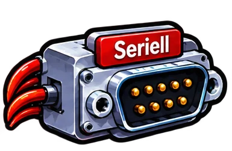
Prinzip: Die Bits werden nacheinander über eine Datenleitung (je Richtung) übertragen.
Vorteile: wenige Adern, dünne und billige Kabel, kleine Stecker, große Entfernungen möglich, kein Gleichlauf-Problem zwischen den Leitungen. Schnelle serielle Verbindungen sind außerdem störfest: Sie senden über ein verdrilltes Adernpaar, bei dem sich Störungen weitgehend aufheben, sichern die Daten mit Prüfsummen und senden Fehlerhaftes einfach neu.
Nachteile: Bei gleichem Takt braucht ein Zeichen mehrere Takte; die Bits müssen beim Sender in eine Reihe gebracht und beim Empfänger wieder zusammengesetzt werden (Schieberegister).
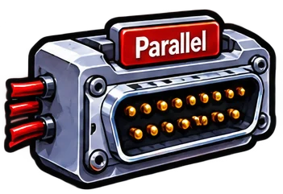
Prinzip: Mehrere Bits werden gleichzeitig über eigene Leitungen übertragen – z. B. 8 Bit auf 8 Leitungen.
Vorteile: Bei gleichem Takt ist ein ganzes Zeichen in einem Takt übertragen; einfache Elektronik.
Nachteile: viele Adern, dicke Kabel, große Stecker; bei hohem Takt kommen die Bits zu verschiedenen Zeiten an (Laufzeitunterschiede) und stören sich gegenseitig (Übersprechen) – deshalb nur kurze Strecken. Außerdem sind sie anfälliger für elektromagnetische Störungen (EMV): Viele einzelne Leitungen fangen Störungen ein, und eine Störspitze trifft im selben Takt gleich mehrere Bits desselben Zeichens. Ein einfaches Paritätsbit erkennt das nicht mehr sicher.
Darum hat seriell gewonnen: Eine einzelne Leitung lässt sich viel schneller takten als ein ganzes Bündel, das im Gleichschritt bleiben muss. USB, SATA, PCI Express, HDMI und Ethernet sind deshalb alle seriell – und schneller als ihre parallelen Vorgänger.
Klicke ein Foto an, um es groß zu sehen.
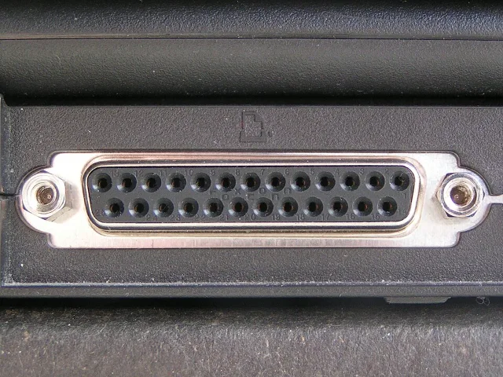
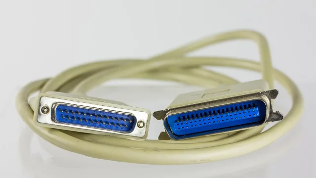
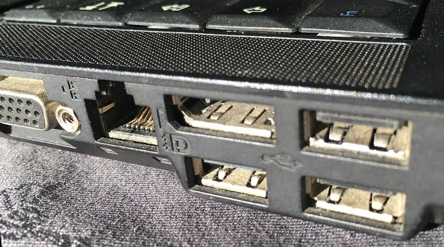
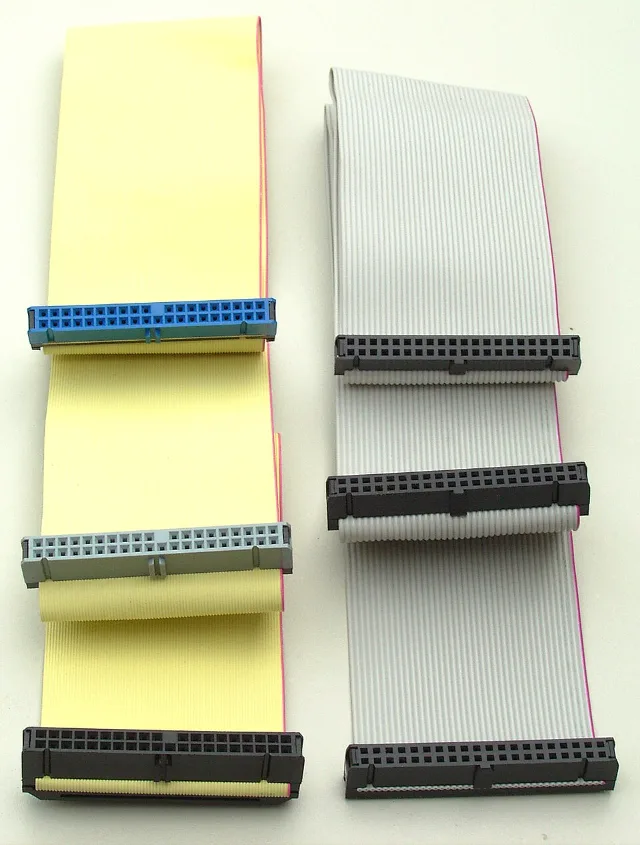
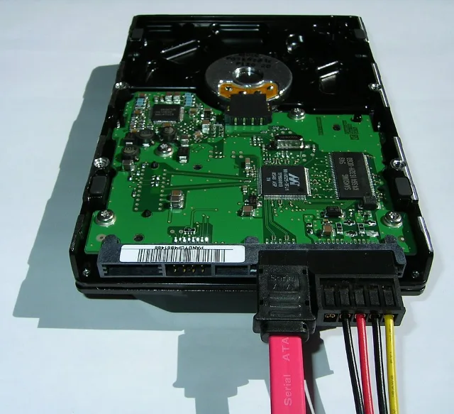
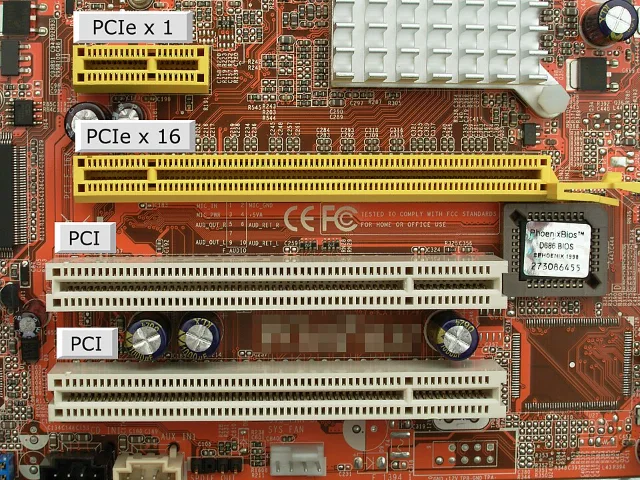
Die Fotos stammen von Wikimedia Commons und wurden für diese Seite verkleinert. Urheber und Lizenz stehen jeweils unter dem Bild.
Fast nur noch auf sehr kurzen Wegen innerhalb eines Geräts, wo man die Leiterbahnen genau gleich lang verlegen kann:
| Wo? | Wie breit? | Warum klappt es dort? |
|---|---|---|
| Arbeitsspeicher (DDR4, DDR5) | 64 Datenbits zwischen Prozessor und RAM, bei DDR5 zwei Kanäle à 32 Bit – dazu Adress- und Steuerleitungen | nur wenige Zentimeter, gleich lange Leiterbahnen (die typischen Schlangenlinien auf dem Mainboard) |
| Grafikspeicher (GDDR, HBM) | GDDR: 32 Bit je Chip, mit 8 Chips also 256 Bit · HBM: 1024 Bit je Speicherstapel | bei HBM sitzen Chip und Speicher direkt nebeneinander im selben Gehäuse (KI-Beschleuniger, High-End-Grafikkarten) |
| Im Inneren der Chips | oft 256 oder 512 Bit zwischen Rechenkernen, Cache und Speichercontroller | Wege von wenigen Millimetern |
| Flash-Speicher in SSDs, USB-Sticks, eMMC | 8 Datenleitungen zu jedem NAND-Chip, SD-Karten 4 | Controller und Speicherchips liegen auf derselben kleinen Platine |
| Mikrocontroller und Embedded | 8 bis 16 Leitungen für kleine Displays (Parallel-RGB), Kameramodule (DVP) und externe Speicher | kurze Wege, niedriger Takt, einfache Ansteuerung |
| Messtechnik-Labore | GPIB (IEEE 488): 8 Datenleitungen | ein alter Standard, der noch in vielen Oszilloskopen und Netzteilen steckt |
Beim Arbeitsspeicher hilft noch mehr: Jede Gruppe von 8 Datenbits bekommt ein eigenes Taktsignal mit (DQS), und beim Einschalten misst der Speichercontroller die Laufzeit jeder einzelnen Leitung und gleicht sie aus.
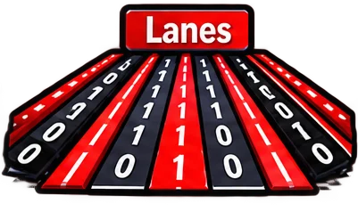
PCI Express x16, Thunderbolt oder 100-Gbit-Ethernet nutzen mehrere Lanes gleichzeitig nebeneinander – man spricht deshalb auch von parallel genutzten seriellen Lanes. Als Schnittstelle gelten sie trotzdem als seriell. Der Unterschied liegt darin, wie die Bits zusammengehalten werden:
PCI, Druckerschnittstelle LPT, Arbeitsspeicher
PCI Express x4, x8, x16
Kurz: Bei parallel gehören die Leitungen bitgenau im Gleichschritt zusammen. Bei Lanes arbeiten mehrere unabhängige serielle Strecken gleichzeitig – zusammengeführt wird erst danach im Puffer.
Dasselbe Prinzip steckt in Gigabit-Ethernet, das auf allen vier Adernpaaren gleichzeitig sendet, jedes Paar für sich seriell, und in der Link Aggregation, bei der mehrere Netzwerkkabel zu einer schnelleren Verbindung gebündelt werden.
Am Speicher im PC sieht man die Entwicklung besonders gut: Erst parallel über das breite IDE-Kabel, dann seriell über SATA – und heute steckt die SSD meist direkt als kleine M.2-Karte auf dem Mainboard.
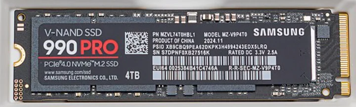
Welche Verbindung eine Karte kann, verrät die Kerbe in der Kontaktleiste (der „Key“). Sie verhindert, dass man eine Karte in einen unpassenden Steckplatz steckt:
| Verbindung | Übertragung | Datenrate (ungefähr) | schneller als IDE |
|---|---|---|---|
| IDE / PATA (Ultra-DMA 133) | parallel, 16 Datenleitungen | 133 MB/s | – |
| SATA III (auch als M.2-SATA) | seriell, 1 Adernpaar je Richtung, 6 Gbit/s | 600 MB/s | × 4,5 |
| PCIe 3.0 x4 (NVMe) | seriell, 4 Lanes à 8 GT/s | 3,9 GB/s | × 30 |
| PCIe 4.0 x4 (NVMe) | seriell, 4 Lanes à 16 GT/s | 7,9 GB/s | × 59 |
| PCIe 5.0 x4 (NVMe) | seriell, 4 Lanes à 32 GT/s | 15,8 GB/s | × 118 |
Auf manchen Arbeitsblättern steht: „Die parallele Schnittstelle M.2 hat die serielle SATA abgelöst.“ Genauer: M.2 ist nur der Steckplatz. Abgelöst wurde SATA durch PCI Express – und beide sind seriell. PCIe ist nur deshalb schneller, weil es mehrere serielle Lanes gleichzeitig nutzt und jede Lane viel schneller taktet.
Die Pfeile in einem Schaltplan zeigen die Übertragungsrichtung einer Leitung.
| Begriff | Bedeutung | Beispiel |
|---|---|---|
| unidirektional (simplex) | Nur einer sendet, der andere empfängt. | die Datenleitungen zum alten Drucker, Radio |
| bidirektional, halbduplex | Beide können senden – aber abwechselnd. | Funkgerät, I²C (eine Datenleitung für beide Richtungen) |
| bidirektional, vollduplex | Beide senden gleichzeitig. | RS-232 mit TXD und RXD, SPI, Ethernet am Switch |
Zwei Geräte mit einem Kabel zu verbinden, ist einfach (Punkt-zu-Punkt). Sollen aber zehn Sensoren und Aktoren miteinander reden, wären es schnell 45 Kabel. Beim Bus hängen deshalb alle Teilnehmer an einem gemeinsamen Übertragungsmedium, zum Beispiel an einem Zweidrahtkabel.
Ein Beispiel ist der KNX-Bus (früher EIB) in der Gebäudetechnik: Taster, Thermostate und Windmesser (Sensoren, sie geben Befehle) und Leuchten, Jalousien und Heizungsventile (Aktoren, sie führen Befehle aus) hängen an einer grünen Zweidrahtleitung. Die 230-V-Leitung versorgt nur die Verbraucher mit Strom.
| Problem | Lösung bei I²C | Lösung bei Ethernet |
|---|---|---|
| Wer ist gemeint? – Geräte brauchen eindeutige Adressen | 7-Bit-Adresse | 48-Bit-MAC-Adresse |
| Wer darf wann senden? – ein Zugriffsverfahren | Nur der Controller beginnt | früher CSMA/CD, heute Switch |
| Was, wenn zwei gleichzeitig senden? – Kollisionen | Arbitrierung: wer eine 0 sendet, gewinnt | Kollision erkennen, warten, neu senden |
| Wie sieht eine Nachricht aus? – ein Protokoll | Start, Adresse, Daten, ACK, Stopp | Ethernet-Frame |
Woher kommt das Wort? „Bus“ kommt vom lateinischen omnibus – „für alle“, wie der Omnibus, in den alle einsteigen. Die oft zu lesende Auflösung „Binary Unit System“ wurde erst nachträglich erfunden.
Der rote Faden: Punkt-zu-Punkt (RS-232, UART) → Bus mit Adressen (I²C, SPI) → Netzwerk mit weltweit eindeutigen Adressen (Ethernet und MAC-Adressen).
Die serielle Schnittstelle, die jahrzehntelang an jedem PC war – und die man heute noch an Switches, Routern und Maschinen findet.
Weiter zu RS-232 →Seriell · Station 2 · Interaktiv
RS-232 (heute TIA-232) legt fest, wie eine serielle Verbindung elektrisch aussieht: welche Spannungen, welche Leitungen, welcher Stecker. Am PC hieß sie COM-Schnittstelle. Heute steckt sie noch in Maschinen, Messgeräten und SPS – und als Konsolen-Anschluss an Switches und Routern.
Klicke auf einen Pin. Für die eigentlichen Daten braucht man nur drei davon – die anderen sind Steuerleitungen.
Im Mikrocontroller arbeitet die serielle Schnittstelle mit Logikpegeln: 0 V für eine 0 und 3,3 V oder 5 V für eine 1. RS-232 verwendet dagegen positive und negative Spannungen – und das auch noch umgekehrt:
−3 V bis −15 V, meist etwa −12 V. Das ist auch der Ruhepegel, wenn nichts gesendet wird.
+3 V bis +15 V, meist etwa +12 V. Zwischen −3 V und +3 V ist der Pegel ungültig.
Was der eine auf TXD sendet, muss beim anderen auf RXD ankommen. Ein Modem (DCE) ist schon „anders herum“ beschaltet – dorthin geht ein gerades Kabel. Zwei Computer (DTE) verbindet man mit einem gekreuzten Nullmodemkabel.
Diese Idee kennst du vielleicht vom Netzwerkkabel: Auch dort gab es gekreuzte Kabel (Crossover), bis die Netzwerkkarten das Kreuzen selbst übernommen haben (Auto-MDI-X).
Eine serielle Verbindung hat keinen gemeinsamen Takt. Sender und Empfänger müssen deshalb vorher dasselbe eingestellt haben – sonst kommt nur Zeichensalat an:
Die Kürzel sind Beispiele für mögliche Formen von Telegrammen. Fülle die Lücken aus – z. B. „8 Datenbits“, „gerade Parität“ oder „2 Stoppbits“.
Merke: Even = gerade Parität → die Anzahl der Einsen (mit Paritätsbit) ist gerade. Odd = ungerade Parität → die Anzahl der Einsen ist ungerade.
Baud zählt die Signalschritte pro Sekunde. Bei RS-232 und UART gibt es nur zwei Pegel, ein Schritt ist also genau ein Bit: 9600 Baud = 9600 Bit/s – Start-, Paritäts- und Stoppbits mitgezählt. Bei Verfahren mit mehr Stufen (wie PAM-5 bei Gigabit-Ethernet) ist das nicht mehr dasselbe.
Stopp oder Stop? Nach deutscher Rechtschreibung „Stopp“ mit zwei p – die englische Schreibweise „Stop“ findet man aber in vielen Programmen.
Startbit, Datenbits, Parität, Stoppbit – baue dein eigenes Telegramm.
Weiter zum UART-Telegramm →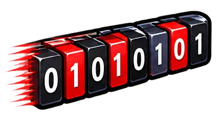
Seriell · Station 3 · Interaktiv
Der UART (Universal Asynchronous Receiver Transmitter) ist der Baustein, der ein Byte in eine Reihe von Bits verwandelt und beim Empfänger wieder zusammensetzt. Fast jeder Mikrocontroller hat einen eingebaut. „Asynchron“ heißt: Es gibt keine Taktleitung – das Startbit sagt dem Empfänger, wann es losgeht.
Der Baustein, der die Bits in den richtigen Takt bringt und das Telegramm baut: Startbit, Daten, Parität, Stopp. Er arbeitet mit Logikpegeln (0 V / 3,3 V oder 5 V) auf den Leitungen TX und RX.
Die elektrische Schnittstelle nach außen: ±12 V, Stecker, Steuerleitungen. Ein Pegelwandler macht aus dem UART-Signal ein RS-232-Signal.
Auf manchen Arbeitsblättern steht: „Nutzt man nur RX und TX, spricht man von UART.“ Genauer: Die Verbindung nur mit RX, TX und Masse heißt Drei-Draht-Verbindung (ohne Hardware-Flusssteuerung). UART ist der Baustein dahinter – ihn gibt es mit und ohne Steuerleitungen. Wenn bei Mikrocontrollern „UART“ gesagt wird, meint man meist genau diese Drei-Draht-Verbindung mit Logikpegeln.
Das höchstwertige Bit, ganz links in der Binärzahl. Bei 8 Bit hat es den Stellenwert 27 = 128.
Das niederwertigste Bit, ganz rechts. Es hat den Stellenwert 20 = 1. Der UART sendet es zuerst.
Achtung beim Ablesen: In einem Mitschnitt steht die Zeit von links nach rechts – das LSB also links. Um die Binärzahl zu bekommen, liest man die Datenbits rückwärts. Aus 10000110 auf der Leitung wird 01100001 = 0x61 = 97 = „a“.
Der Sender zählt die Einsen in den Datenbits und setzt das Paritätsbit so, dass die Anzahl der Einsen einschließlich Paritätsbit gerade (Even) bzw. ungerade (Odd) ist. Klicke Datenbits an, um sie zu ändern, und lass dann auf dem Weg Bits umkippen.
Die Parität erkennt jeden einzelnen Bitfehler – kippen zwei Bits, passt die Zahl der Einsen wieder und der Fehler bleibt unentdeckt. Korrigieren kann sie nichts: Der Empfänger weiß nur, dass etwas falsch ist, nicht welches Bit.
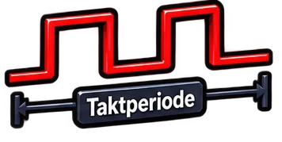
Aufgabe 1: Ein Datentelegramm besteht aus 16 Datenbits, 2 Stoppbits, 1 Paritätsbit und einem Startbit. Wie viele Telegramme können bei 57 600 Baud pro Sekunde übertragen werden?
Ein Telegramm hat 1 + 16 + 1 + 2 = 20 Bit. Bei 57 600 Bit/s: 57 600 ÷ 20 = 2 880 → 2 880 Telegramme pro Sekunde.
16 Datenbits sind beim UART unüblich (5 bis 9 sind möglich) – gerechnet wird aber genauso.
Für die Aufgaben 2 und 3 hat ein Logikanalysator (hier wie im Programm PulseView) die Leitungen RX und TX eines Mikrocontrollers aufgezeichnet und die Telegramme gleich dekodiert: oben die einzelnen Bits, darunter der Wert hexadezimal. Format 8N1.
Eine UART-Verbindung verbindet genau zwei Geräte. Was, wenn ein Mikrocontroller mit vielen Sensoren sprechen soll? Die Lösung: Adressen.
Weiter zu I²C →Seriell · Station 4 · Interaktiv
I²C (Inter-Integrated Circuit, gesprochen „I-Quadrat-C“) hat Philips 1982 entwickelt, um viele Chips auf einer Platine zu verbinden. Zwei Leitungen reichen für alle: Jeder Teilnehmer hat eine eigene Adresse. Und weil eine Leitung den Takt trägt, arbeitet I²C synchron.
Der Controller beginnt jede Übertragung mit einer Startbedingung und sendet dann die 7-Bit-Adresse – hier mit dem höchstwertigen Bit zuerst, anders als beim UART. Das 8. Bit sagt, ob er schreiben (0) oder lesen (1) will. Im 9. Takt antwortet der angesprochene Teilnehmer mit ACK, indem er SDA auf Low zieht.
Ein Logikanalysator hat eine I²C-Übertragung aufgezeichnet und dekodiert: oben die Bits, darunter Adresse, Richtung und Antwort. D0 ist die Datenleitung SDA, D1 der Takt SCL.
Mit 7 Bit gibt es 27 = 128 Adressen. 16 davon sind für Sonderzwecke reserviert (0x00–0x07 und 0x78–0x7F, z. B. für einen Aufruf an alle oder die Erweiterung auf 10 Bit). Es bleiben 112 Adressen für Teilnehmer.
| Modus | Datenrate |
|---|---|
| Standard Mode | 100 kbit/s |
| Fast Mode | 400 kbit/s |
| Fast-mode Plus | 1 Mbit/s |
| High-speed Mode | 3,4 Mbit/s |
| Ultra-fast Mode | 5 Mbit/s – nur in eine Richtung, ohne ACK |
I²C ist sparsam, aber nicht sehr schnell. SPI braucht mehr Leitungen – und schafft ein Vielfaches.
Weiter zu SPI →Seriell · Station 5 · Interaktiv
Das Serial Peripheral Interface (SPI) stammt von Motorola. Es verwendet vier Leitungen, arbeitet synchron und vollduplex und schafft je nach Chip einige bis über 50 Mbit/s. Statt Adressen gibt es eine eigene Leitung, die einen Teilnehmer auswählt.
| Leitung | Bedeutung | Richtung |
|---|---|---|
| CS (oft mit Strich: CS) | Chip Select – wählt den Teilnehmer aus. Der Strich heißt low-aktiv: ausgewählt ist, wer 0 V bekommt. | Main → Subnode |
| SCLK | SPI Clock – der Takt | Main → Subnode |
| MOSI | Main Out, Subnode In – am Subnode oft SDI | Main → Subnode |
| MISO | Main In, Subnode Out – am Subnode oft SDO | Subnode → Main |
Ältere Datenblätter sagen Master und Slave (daher die Abkürzungen MOSI und MISO), neuere auch Controller und Peripheral (PICO, POCI).
Main und Subnode haben je ein 8-Bit-Schieberegister. Bei jedem Takt schiebt der Main ein Bit über MOSI hinaus – und bekommt gleichzeitig eines über MISO herein. Nach 8 Takten haben beide ihre Bytes getauscht. Hier sendet der Main die Zahl 79 (0x4F) wie im Mitschnitt auf dem Arbeitsblatt, der Subnode antwortet mit 0xFF.
SPI überträgt wie I²C das MSB zuerst.
Ein Logikanalysator hat eine SPI-Übertragung aufgezeichnet und dekodiert. Zu sehen sind die Leitungen MISO, MOSI und der Takt CLK.
| UART / RS-232 | I²C | SPI | Ethernet | |
|---|---|---|---|---|
| Leitungen | TX, RX, Masse | SDA, SCL (+ Masse) | CS, SCLK, MOSI, MISO (+ Masse) | 2 oder 4 Adernpaare |
| Takt | asynchron – Startbit | synchron – SCL | synchron – SCLK | Takt steckt im Leitungscode |
| Richtung | vollduplex | halbduplex | vollduplex | vollduplex |
| Teilnehmer | 2 | bis 112 (7-Bit-Adressen) | 1 je CS-Leitung | praktisch beliebig viele |
| Auswahl | keine nötig | 7-Bit-Adresse | eigene Leitung | 48-Bit-MAC-Adresse |
| Datenrate | meist bis 115,2 kbit/s | 0,1 bis 5 Mbit/s | bis über 50 Mbit/s | 10 Mbit/s bis 800 Gbit/s |
| Reichweite | etwa 15 m | unter 1 m | wenige cm bis 1 m | 100 m (Kupfer), km (Glasfaser) |
Auch Ethernet ist seriell: Auf jedem Adernpaar kommen die Signale nacheinander an. Neu ist, dass beliebig viele Geräte aus aller Welt zusammenkommen. Eine 7-Bit-Adresse reicht dafür nicht – jede Netzwerkkarte bekommt eine weltweit eindeutige 48-Bit-Adresse, die MAC-Adresse.
PCI Express und M.2: Wie mehrere serielle Lanes zusammenarbeiten und warum M.2 trotzdem eine serielle Verbindung ist, steht in Station 1 „Seriell & parallel“.
Im Seriell-Dojo trainierst du seriell und parallel, RS-232, das Übertragungsformat, Baudraten, das Dekodieren von Mitschnitten sowie I²C und SPI.
Weiter zum Seriell-Dojo →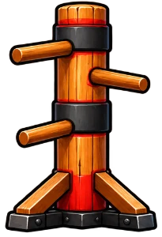
Seriell · Station 6 · Training
Sechs Gürtel, sechs Themen. Löse 5 Aufgaben in Folge richtig, um einen Gürtel zu erhalten.
Ethernet überträgt auch seriell – aber zwischen beliebig vielen Geräten. Dafür braucht jede Netzwerkkarte eine weltweit eindeutige Adresse: die MAC-Adresse.
Weiter zum Thema MAC-Adressen →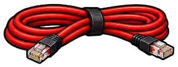
MAC · Station 1 · Grundlagen
Jede Netzwerkkarte – im PC, im Handy, in der SPS – hat eine eigene Hardware-Adresse: die MAC-Adresse. Mit ihr finden sich Geräte im lokalen Netz. Sie ist das Fundament, auf dem später die IP-Adressen aufbauen.
MAC steht für Media Access Control. Die Adresse wird vom Hersteller fest in die Netzwerkkarte eingetragen („eingebrannt“) und heißt deshalb auch physische Adresse oder Hardware-Adresse. Windows zeigt sie bei ipconfig /all als „Physische Adresse“.
Wie die Seriennummer eines Geräts: fest, weltweit eindeutig, ändert sich nicht, wenn das Gerät umzieht. Damit stellt ein Switch Daten innerhalb eines Netzes zu.
Wie die Postanschrift: hängt davon ab, in welchem Netz das Gerät gerade steckt. Damit finden Router den Weg zwischen Netzen – das kommt im Thema IPv4.
MAC-Adressen sind nach Hersteller sortiert, nicht nach Ort: Zwei Netzwerkkarten mit fast gleicher Adresse können in Berlin und in Tokio stecken. Wollte man das ganze Internet nur mit MAC-Adressen betreiben, bräuchte jeder Router ein riesiges „Telefonbuch“ mit einem Eintrag für jedes einzelne Gerät der Welt – viele Milliarden Einträge, die sich ständig ändern, weil Geräte umziehen, neu dazukommen oder ausgeschaltet werden. Das wäre viel zu groß und zu langsam.
Deshalb gilt die MAC-Adresse nur im lokalen Netz, wo ein Switch sich ein paar Dutzend oder Hundert Einträge merken muss. Für den Weg durchs Internet gibt es die IP-Adresse: Sie ist wie eine Postanschrift nach Netzen geordnet, sodass ein Router nur wissen muss, in welche Richtung ein ganzes Netz liegt – nicht jedes einzelne Gerät.
Eine MAC-Adresse hat 48 Bit = 6 Bytes. Jedes Byte wird mit 2 Hex-Ziffern geschrieben (0–9 und A–F), insgesamt also 12 Ziffern. Die erste Hälfte nennt den Hersteller, die zweite das einzelne Gerät:
| Wo? | Schreibweise |
|---|---|
Windows (ipconfig /all, getmac) | 00-1A-2B-3C-4D-5E – Bindestriche, groß |
| Linux, macOS, viele Geräte | 00:1a:2b:3c:4d:5e – Doppelpunkte |
| Cisco-Switches | 001a.2b3c.4d5e – je 2 Bytes mit Punkt |
Alle drei sind dieselbe Adresse – nur anders geschrieben. Groß- und Kleinbuchstaben sind gleichwertig.
Die IEEE (Institute of Electrical and Electronics Engineers, gesprochen „I triple E“) ist der weltweit größte Berufsverband für Elektrotechnik und Informatik. Sie entwickelt Standards – also Regeln, an die sich alle Hersteller halten, damit ihre Geräte zusammenpassen. Für lokale Netze ist das Projekt 802 zuständig.
Merke: MAC-Adressen und ihre Herstellercodes kommen von der IEEE (Standards 802.3 Ethernet, 802.11 WLAN). Die IP-Adressen dagegen verwaltet die IANA – zwei verschiedene Organisationen für zwei verschiedene Aufgaben.
Die beiden niedrigsten Bits des ersten Bytes (ganz rechts) haben eine feste Bedeutung:
| Bit | 0 bedeutet | 1 bedeutet |
|---|---|---|
| I/G-Bit (ganz rechts) | Individual – ein einzelnes Gerät (Unicast) | Group – eine Gruppe von Geräten (Multicast) |
| U/L-Bit (links daneben) | Universal – vom Hersteller, weltweit eindeutig | Local – per Software vergeben |
FF:FF:FF:FF:FF:FF – alle 48 Bit sind 1. Dieser Frame geht an alle Geräte im lokalen Netz.Gib eine MAC-Adresse in beliebiger Schreibweise ein – zum Beispiel die deines eigenen PCs aus ipconfig /all.
Ein Switch merkt sich, welche MAC-Adresse an welchem Anschluss hängt – und schickt Frames dann gezielt dorthin. Probier es aus.
Weiter zu Switch & MAC-Tabelle →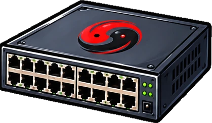
MAC · Station 2 · Interaktiv
Ein Switch verbindet die Geräte eines lokalen Netzes. Er schaut in jeden Frame auf die MAC-Adressen und lernt dabei selbstständig, welches Gerät an welchem Port hängt.
Tipp: Schick zuerst einen Frame von A an C – der Switch kennt C noch nicht und flutet. Dann antworte von C an A: Jetzt kennt er A und schickt gezielt.
Einträge, die eine Weile nicht benutzt werden, löscht der Switch wieder (oft nach 5 Minuten). So bleibt die Tabelle aktuell, wenn ein Gerät umgesteckt wird. Ein Switch arbeitet nur mit MAC-Adressen – IP-Adressen schaut er sich nicht an.
Vergleiche mit der Stern-Topologie im Thema Topologien: Der Switch in der Mitte ist genau so ein Gerät.
Im MAC-Dojo trainierst du Hexadezimalzahlen, Schreibweisen, Adressarten, das Wissen rund um die IEEE und die Arbeit des Switches.
Weiter zum MAC-Dojo →MAC · Station 3 · Training
Fünf Gürtel, fünf Themen. Löse 5 Aufgaben in Folge richtig, um einen Gürtel zu erhalten.
MAC-Adressen bringen Daten innerhalb eines Netzes ans Ziel. Für den Weg zwischen Netzen braucht man IP-Adressen – das ist das nächste Thema.
Weiter zum Thema IPv4 →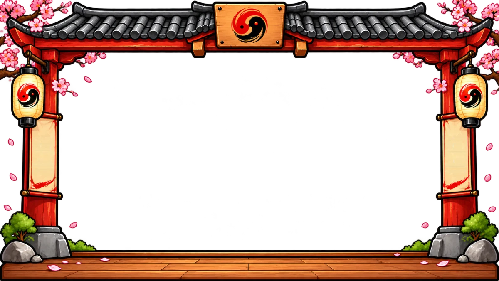
IPv4 · Station 1 · Grundlagen
Nach den MAC-Adressen kommt jetzt die IP-Adresse. Hier lernst du, wie IPv4-Adressen aufgebaut sind, was die Subnetzmaske wirklich tut und wie man ein Firmennetz in Subnetze aufteilt. Arbeite dich durch die sieben Stationen – danach wird das nächste Thema Topologien freigeschaltet.
Computer sehen eine IP-Adresse als 32 Nullen und Einsen. Damit Menschen sie lesen können, teilt man sie in vier Oktette zu je 8 Bit und schreibt jedes Oktett als Dezimalzahl: 192.168.10.77. Ein Oktett kann Werte von 0 bis 255 annehmen, denn 8 Bit ergeben 28 = 256 Möglichkeiten.
Probier es aus: Klick auf die Bits und beobachte die Dezimalzahl. Jedes Bit hat eine feste Wertigkeit.
Jede IP-Adresse hat zwei Teile – wie eine Postadresse aus Straße und Hausnummer:
Wo genau die Grenze liegt, steht nicht in der Adresse selbst. Dafür braucht man die Subnetzmaske.
Die Subnetzmaske ist ebenfalls 32 Bit lang. Sie markiert jedes Bit der Adresse:
1 = dieses Bit gehört zum Netzanteil0 = dieses Bit gehört zum HostanteilDie Einsen stehen immer links und lückenlos. Deshalb reicht es, sie zu zählen: 255.255.255.0 hat 24 Einsen → Kurzschreibweise /24 (CIDR- oder Präfix-Schreibweise).
Achtung: In den IPv4-Einstellungen von Windows oder im TIA Portal kann man die Maske nicht als /24 eingeben – dort steht immer die Punktschreibweise 255.255.255.0. Du musst also in beide Richtungen umrechnen können.
Deshalb gibt es in einer Maske pro Oktett nur diese neun Werte:
Ein Gerät verknüpft seine IP-Adresse Bit für Bit per UND mit der Maske. Nur wo beide Bits 1 sind, ergibt sich 1. So entsteht die Netzadresse. Damit prüft das Gerät, ob ein Ziel im eigenen Netz liegt (direkt zustellen) oder nicht (an das Standard-Gateway, also den Router, schicken).
Tipp: Fahre mit der Maus über ein Bit – die ganze Spalte wird hervorgehoben.
In jedem Netz sind zwei Adressen reserviert:
0. Bezeichnet das Netz selbst.1. Erreicht alle Geräte im Netz.Bei n Host-Bits gibt es also 2n − 2 nutzbare Adressen für Geräte (inklusive Router!).
Beim Subnetting leiht man sich Bits aus dem Hostanteil und schlägt sie dem Netzanteil zu: Jedes geliehene Bit verdoppelt die Zahl der Netze und halbiert ihre Größe.
Weiter zur Masken-Werkstatt →IPv4 · Station 2 · Interaktiv
Gib eine IP-Adresse ein und verschiebe die Grenze zwischen Netz- und Hostanteil – mit dem Regler, per Maske oder durch Klick auf die Bits der Maske.
Klick auf ein Subnetz, um eine Adresse darin zu untersuchen.
Oft heißt es, 192.168.x.x sei ein „Klasse-C-Netz“ mit 255.255.255.0 – in RFC 1918 steht aber /16. Die nächste Station klärt, wie beides zusammenpasst und warum die Klassen in der Praxis noch wichtig sind.
Weiter zu den Netzklassen →IPv4 · Station 3 · Geschichte & Missverständnis
Woran erkennt man eine Klasse? Und warum heißt es oft „192.168.x.x ist ein Klasse-C-Netz mit 255.255.255.0“, während in RFC 1918 „192.168/16“ steht? Wer hat recht?
Im ursprünglichen IPv4-Standard von 1981 gab es keine Subnetzmaske. Die Größe des Netzes ergab sich allein aus den ersten Bits der Adresse:
“There are three formats or classes of internet addresses: in class a, the high order bit is zero, the next 7 bits are the network, and the last 24 bits are the local address; in class b, the high order two bits are one-zero, the next 14 bits are the network and the last 16 bits are the local address; in class c, the high order three bits are one-one-zero, the next 21 bits are the network and the last 8 bits are the local address.”RFC 791, Abschnitt 2.3
| Klasse | Erste Bits | Erstes Oktett | Netzanteil | Standardmaske | Privater Bereich (RFC 1918) |
|---|---|---|---|---|---|
| A | 0 | 0 – 127 | 8 Bit | 255.0.0.0 (/8) | 10.0.0.0/8 |
| B | 10 | 128 – 191 | 16 Bit | 255.255.0.0 (/16) | 172.16.0.0/12 |
| C | 110 | 192 – 223 | 24 Bit | 255.255.255.0 (/24) | 192.168.0.0/16 |
| D | 1110 | 224 – 239 | Multicast (später ergänzt) | ||
| E | 1111 | 240 – 255 | reserviert (später ergänzt) | ||
Klassenbasierte Sicht
„192.168.1.0 ist ein privates Klasse-C-Netz mit der Subnetzmaske 255.255.255.0.“
RFC 1918, Abschnitt 3
10.0.0.0 - 10.255.255.255 (10/8 prefix) 172.16.0.0 - 172.31.255.255 (172.16/12 prefix) 192.168.0.0 - 192.168.255.255 (192.168/16 prefix)
RFC 1918 löst den scheinbaren Widerspruch direkt im nächsten Satz selbst auf:
“Note that (in pre-CIDR notation) the first block is nothing but a single class A network number, while the second block is a set of 16 contiguous class B network numbers, and third block is a set of 256 contiguous class C network numbers.”RFC 1918, Abschnitt 3
Beschreibt den reservierten Vorrat: Alle 65.536 Adressen von 192.168.0.0 bis 192.168.255.255 dürfen privat verwendet werden. Das ist kein Netz, das man so konfigurieren muss – es ist der Bereich, aus dem man sich bedient.
Beschreibt, wie groß ein einzelnes Netz daraus im alten Klassensystem (RFC 791) war: /24 mit 254 Hosts. Der /16-Block enthält 256 solcher Klasse-C-Netze (192.168.0.0/24 bis 192.168.255.0/24).
Seit CIDR (1993) gibt es keine Klassen mehr. Innerhalb von 192.168.0.0/16 darfst du jedes Präfix ab /16 verwenden – /24 ist nur eine verbreitete Gewohnheit.
Die Kurzschreibweise /24 ist praktisch – aber viele Konfigurationsoberflächen kennen sie nicht. Dort trägt man die Subnetzmaske in Punktschreibweise ein:
255.255.255.0. Windows schlägt beim Eintippen der IP-Adresse sogar die Standardmaske der Klasse vor (bei 192.168.1.10 → 255.255.255.0, bei 10.0.0.5 → 255.0.0.0).255.255.255.0.Wer Geräte konfiguriert, muss deshalb /x und Punktschreibweise sicher ineinander umrechnen können – und die Standardmasken der Klassen A, B und C kennen, denn genau diese sieht man dort am häufigsten.
Die drei privaten Blöcke sind sehr unterschiedlich groß. Im Vergleich unten entspricht die Fläche der Anzahl der Adressen:
Wähle einen Block und bilde mit dem Regler Netze. In allen drei Blöcken gilt dieselbe Einheit: Ein Kästchen ist ein /24 (256 Adressen, so groß wie ein „Klasse-C-Netz“). Gleiche Farbe = gleiches Netz.
Fahre über ein Kästchen.
Mit noch längeren Präfixen (/25 bis /30) entstehen noch mehr, kleinere Netze – sie wären kleiner als ein Kästchen.
Neben den privaten Bereichen gibt es Adressen mit fester Sonderbedeutung – zum Beispiel 127.0.0.1 oder die 169.254.x.x, die Windows vergibt, wenn etwas schiefläuft.
Weiter zu den besonderen Adressen →IPv4 · Station 4 · Sonderfälle
Nicht jede IPv4-Adresse darf einem Gerät gegeben werden. Manche Bereiche haben eine feste Bedeutung – und wer sie kennt, erkennt Fehler beim Einrichten sofort. Wer zum Beispiel bei ipconfig eine 169.254.x.x sieht, weiß gleich, wo er suchen muss.
Der ganze Bereich 127.0.0.0/8 ist für das Loopback reserviert. Üblich ist 127.0.0.1, dafür gibt es den Namen localhost. Pakete an diese Adresse verlassen den Rechner nie – sie werden intern „zurückgeschleift“.
ping 127.0.0.1 prüft, ob TCP/IP auf dem eigenen Rechner funktioniert – das klappt sogar ohne Netzwerkkabel. Über Netzwerkkarte, Kabel oder Netz sagt dieser Test deshalb nichts aus.http://localhost.In IPv6 heißt die Loopback-Adresse ::1 – mehr dazu im Thema IPv6.
C:\> ping 127.0.0.1
Ping wird ausgeführt für 127.0.0.1 mit 32 Bytes Daten:
Antwort von 127.0.0.1: Bytes=32 Zeit<1ms TTL=128
Antwort von 127.0.0.1: Bytes=32 Zeit<1ms TTL=128
Antwort von 127.0.0.1: Bytes=32 Zeit<1ms TTL=128
Antwort von 127.0.0.1: Bytes=32 Zeit<1ms TTL=128
Normalerweise bekommt ein PC seine Adresse automatisch von einem DHCP-Server (meist im Router). Antwortet keiner, gibt sich Windows selbst eine Adresse aus 169.254.0.0/16. Das heißt APIPA (Automatic Private IP Addressing), allgemein Link-Local-Adresse (RFC 3927).
C:\> ipconfig Ethernet-Adapter Ethernet: Verbindungsspezifisches DNS-Suffix: Autokonfiguration IPv4-Adresse . : 169.254.83.17 Subnetzmaske . . . . . . . . . . : 255.255.0.0 Standardgateway . . . . . . . . . :
Merke: Siehst du 169.254.x.x, ist nicht die Adresse das Problem, sondern der Weg zum DHCP-Server: Kabel, Switch-Port, WLAN-Verbindung, falsches VLAN – oder der DHCP-Server selbst ist ausgefallen.
| Bereich | Bedeutung | Einem Gerät geben? | Wo begegnet sie dir? |
|---|---|---|---|
0.0.0.0 | „noch keine Adresse“ bzw. „alle Schnittstellen“ | nein | Absender der ersten DHCP-Anfrage; als 0.0.0.0/0 die Standardroute in Routingtabellen |
255.255.255.255 | Broadcast an alle im eigenen Netz | nein | DHCP-Anfrage des PCs; Router leiten sie nicht weiter |
| Netz- und Broadcastadresse eines Subnetzes | erste bzw. letzte Adresse, z. B. 192.168.1.0 und 192.168.1.255 bei /24 | nein | bei jeder Subnetz-Berechnung (Grundlagen) |
127.0.0.0/8 | Loopback, das Gerät selbst | nein | ping 127.0.0.1, localhost |
169.254.0.0/16 | APIPA / Link-Local | nein (vergibt sich das Gerät selbst) | ipconfig, wenn DHCP fehlt |
10.0.0.0/8 · 172.16.0.0/12 · 192.168.0.0/16 | privat (RFC 1918) | ja | jedes Heim-, Schul- und Firmennetz (Netzklassen) |
100.64.0.0/10 | Provider-NAT (Carrier-Grade NAT) | nein | WAN-Adresse von LTE-/5G-Routern: Man teilt sich eine öffentliche Adresse mit anderen Kunden |
192.0.2.0/24 · 198.51.100.0/24 · 203.0.113.0/24 | nur für Dokumentation | nein | Beispiele in Büchern und Anleitungen |
224.0.0.0/4 | Multicast (ehemals Klasse D) | nein | Nachrichten an eine Gruppe, z. B. Video-Streaming oder Routing-Protokolle |
240.0.0.0/4 | reserviert (ehemals Klasse E) | nein | praktisch nirgends |
Gib eine beliebige IPv4-Adresse ein und finde heraus, ob sie etwas Besonderes ist.
Die IP-Adressen reisen nicht allein: Jedes Paket trägt einen Header mit Absender, Ziel und weiteren Steuerinformationen. Die nächste Station zeigt, was darin steht.
Weiter zum IPv4-Header →IPv4 · Station 5 · Aufbau
Jedes IP-Paket besteht aus zwei Teilen: dem Header mit Steuerinformationen und den eigentlichen Daten. Im Header stehen nicht nur Absender- und Zieladresse – sondern alles, was ein Router zum Weiterleiten braucht.
Jede Zeile entspricht 32 Bit, die Breite der Felder ist maßstäblich. Ohne Optionen ist der Header 20 Byte lang (5 Zeilen × 4 Byte). Klick auf ein Feld, um zu erfahren, wofür es da ist.
Klick auf ein Feld.
Jeder Router zieht von der TTL 1 ab. Weil die Prüfsumme über den ganzen Header berechnet wird, ändert sie sich dadurch jedes Mal mit – jeder Router muss sie neu berechnen. Verschiebe den Regler und beobachte die Prüfsumme (echt berechnet für das Beispielpaket):
TTL=127 zurück, lag genau ein Router dazwischen.C:\> tracert 203.0.113.5
Routenverfolgung zu 203.0.113.5 über maximal 30 Hops
1 <1 ms <1 ms <1 ms 192.168.1.1
2 8 ms 7 ms 8 ms 100.64.0.1
3 12 ms 11 ms 12 ms 198.51.100.9
4 14 ms 13 ms 14 ms 203.0.113.5
Ablaufverfolgung beendet.
Wie IPv6 den Header vereinfacht – ohne Prüfsumme und mit fester Länge –, erfährst du später im Thema IPv6.
Im Übungs-Dojo trainierst du Netzadressen, Broadcasts, Masken, Hostanzahlen und besondere Adressen mit zufällig erzeugten Aufgaben – Gürtel für Gürtel.
Weiter zum Übungs-Dojo →IPv4 · Station 6 · Training
Acht Gürtel, acht Themen. Löse 5 Aufgaben in Folge richtig, um einen Gürtel zu erhalten. Die Aufgaben werden zufällig erzeugt – du kannst also beliebig lange trainieren.
Im Firmennetz-Planer teilst du ein Netz für drei Abteilungen auf und vergibst Adressen an Router und Geräte – wie in einem echten Projekt.
Weiter zum Firmennetz-Planer →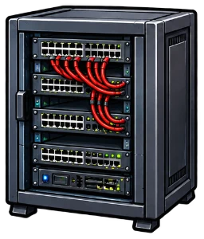
IPv4 · Station 7 · Praxis
Eine Firma hat drei Abteilungen: Verwaltung, Entwicklung und Reparatur. Jede Abteilung soll ein eigenes Subnetz bekommen, ein Router verbindet sie. Plane das Netz Schritt für Schritt – das Dojo prüft jede Eingabe sofort.
Die Firma hat drei Abteilungen mit folgendem Bedarf an Geräten (Hosts) – das ist deine Aufgabenstellung. Du kannst die Zahlen ändern oder eine neue Aufgabe würfeln. Denk daran: Der Router braucht in jedem Subnetz zusätzlich eine Adresse – sie ist dort das Standard-Gateway.
Gib jeder Abteilung ein eigenes Netz aus dem Firmennetz – z. B. 192.168.0.0/24 für die eine und 192.168.1.0/24 für die nächste Abteilung. Alle Netze sind gleich groß (FLSM), haben also dieselbe Maske. Sie müssen im Firmennetz liegen, groß genug sein und dürfen sich nicht überschneiden. Masken kannst du als 255.255.255.192 oder /26 eingeben.
So verteilen sich die Subnetze im Firmennetz. Graue Kästchen sind noch frei.
Klicke auf den Router und vergib seine drei Schnittstellen-Adressen. Klicke dann auf die Geräte und trage IP-Adresse, Subnetzmaske und Standard-Gateway ein. Die Geräte stehen stellvertretend für alle Geräte der Abteilung.
Du hast alle sieben IPv4-Stationen durchlaufen. Als Nächstes geht es um Topologien: Wie werden Geräte in einem Netzwerk miteinander verkabelt – und was passiert, wenn etwas ausfällt?
Weiter zum Thema Topologien →Topologien · Station 1 · Grundlagen
Die Topologie beschreibt, wie die Geräte eines Netzwerks miteinander verbunden sind – die Form des Netzes. Sie entscheidet, wie viele Leitungen man braucht, wie teuer das Netz wird und was passiert, wenn ein Gerät oder eine Leitung ausfällt.
Probier es aus: Klick in den Bildern auf ein Gerät oder eine Leitung, um einen Ausfall zu simulieren. Ausgegraute Geräte können mit niemandem mehr kommunizieren.
Genau zwei Geräte sind über eine Leitung direkt miteinander verbunden – ohne Switch dazwischen.
Praxis: PC direkt an der SPS zum Programmieren, Richtfunkstrecke zwischen zwei Gebäuden, Verbindung zwischen zwei Routern.
Alle Endgeräte hängen mit je einer eigenen Leitung an einem zentralen Gerät, heute einem Switch.
Praxis: Büro, Klassenzimmer, Heimnetz – die häufigste Topologie überhaupt.
Randnotiz Bus: Früher hingen alle Geräte hintereinander an einem gemeinsamen Kabel (Bus, z. B. mit Koaxialkabel). Ein einziger Kabelbruch legte das ganze Netz lahm. Deshalb hat der Stern den Bus abgelöst.
Mehrere Sterne werden hierarchisch verbunden: Ein Hauptverteiler versorgt Unterverteiler, an denen die Endgeräte hängen. Es gibt keine Kreise.
Praxis: Schul- oder Firmennetz – Hauptverteiler im Serverraum, ein Switch pro Etage, darunter die Räume.
Jedes Gerät hat genau zwei Nachbarn, alle zusammen bilden einen geschlossenen Kreis.
Praxis: Industrie, z. B. ein PROFINET-Ring mit MRP (Media Redundancy Protocol), eingerichtet im TIA Portal. Im Normalbetrieb ist eine Leitung des Rings logisch blockiert. Fällt eine Leitung aus, schaltet der Ring innerhalb von Millisekunden auf den anderen Weg um (typisch höchstens 200 ms) – die Anlage läuft weiter.
Die Geräte sind über mehrere Wege miteinander verbunden. Vollständig vermascht: jedes Gerät mit jedem. Teilweise vermascht: mehrere Wege, aber nicht alle Verbindungen.
Praxis: Internet-Backbone und Verbindungen zwischen Rechenzentren (meist teilweise vermascht), WLAN-Mesh im Haus.
Jedes der n Geräte wird mit allen n − 1 anderen verbunden. Weil jede Leitung zwei Geräte verbindet, würde man sie so doppelt zählen – also teilen durch 2:
Leitungen = n · (n − 1) / 2
| Topologie | Leitungen bei n Geräten | Ein Endgerät / eine Leitung fällt aus | Zentrales Gerät fällt aus | Aufwand |
|---|---|---|---|---|
| Punkt-zu-Punkt | 1 | Verbindung weg | – (keins vorhanden) | sehr gering |
| Stern | n (Endgeräte) | nur dieses Gerät betroffen | alles fällt aus | gering |
| Baum | n − 1 | nur dieses Gerät betroffen | ganzer Ast bzw. Äste getrennt | mittel |
| Ring | n | alle weiter erreichbar (anderer Weg) | – (keins vorhanden) | gering |
| Vollmesh | n · (n − 1) / 2 | alle weiter erreichbar | – (keins vorhanden) | sehr hoch |
| Teilmesh | zwischen n und n · (n − 1) / 2 | meist alle weiter erreichbar | – (keins vorhanden) | hoch |
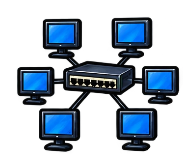
Im Baukasten verbindest du Geräte selbst – so, dass die verlangte Topologie entsteht.
Weiter zum Baukasten →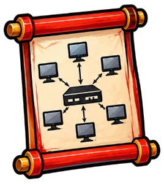
Topologien · Station 2 · Interaktiv
Wähle eine Topologie und verbinde die Geräte so, dass sie entsteht. Klick auf ein Gerät und dann auf ein zweites – schon liegt eine Leitung. Ein Klick auf eine Leitung entfernt sie wieder. Geräte kannst du per Drag-and-drop an eine andere Stelle ziehen.
Tastatur: Mit Tab zu einem Gerät springen, mit Enter auswählen, mit den Pfeiltasten verschieben, Esc bricht ab.
Im Topologie-Dojo erkennst, zählst und baust du Topologien mit zufälligen Aufgaben – Gürtel für Gürtel.
Weiter zum Topologie-Dojo →Topologien · Station 3 · Training
Vier Gürtel: Topologien erkennen, Leitungen zählen, Ausfälle einschätzen und selbst bauen. Löse 5 Aufgaben in Folge richtig, um einen Gürtel zu erhalten.
Als Nächstes geht es um IPv6: Wie sehen die neuen Adressen aus, warum ist der Header einfacher – und warum hat jedes Gerät gleich mehrere Adressen?
Weiter zum Thema IPv6 →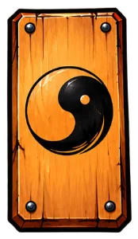
IPv6 · Station 1 · Grundlagen
Die IPv4-Adressen sind knapp geworden. IPv6 löst das mit viermal so langen Adressen – und räumt dabei gleich ein paar alte Schwächen auf. Hier lernst du, wie eine IPv6-Adresse aufgebaut ist.
IPv4 hat 32 Bit – das ergibt 232 ≈ 4,3 Milliarden Adressen. Für alle Smartphones, PCs, Server, Fernseher, Maschinen und Sensoren der Welt reicht das längst nicht mehr. Die letzten freien IPv4-Blöcke hat die zentrale Vergabestelle IANA schon 2011 verteilt. Heute behilft man sich mit Tricks wie NAT: Viele Geräte teilen sich eine öffentliche Adresse.
IPv6 hat 128 Bit. Viermal so viele Bits bedeuten aber nicht viermal so viele Adressen – jedes zusätzliche Bit verdoppelt die Anzahl:
Die 128 Bit werden in 8 Blöcke zu je 16 Bit geteilt. Jeder Block wird hexadezimal mit 4 Ziffern geschrieben (0–9 und a–f), die Blöcke trennt ein Doppelpunkt. Eine Hex-Ziffer steht genau für 4 Bit.
Fahre mit der Maus über eine Hex-Ziffer, um ihre 4 Bit zu sehen. Hex-Ziffern: 0 = 0000 · 1 = 0001 · … · 9 = 1001 · a = 1010 · b = 1011 · c = 1100 · d = 1101 · e = 1110 · f = 1111
Wie bei CIDR gibt die Zahl nach dem Schrägstrich an, wie viele Bit zum Netz gehören: 2001:db8:85a3:42::/64. Eine Subnetzmaske in Punktschreibweise gibt es bei IPv6 nicht mehr – auch Windows fragt in den IPv6-Einstellungen nur nach der Subnetzpräfixlänge.
| IPv4 | IPv6 | |
|---|---|---|
| Länge | 32 Bit | 128 Bit |
| Schreibweise | 4 Dezimalzahlen mit Punkt: 192.168.1.10 | 8 Hex-Blöcke mit Doppelpunkt: 2001:db8::1 |
| Netz angeben | Subnetzmaske oder /Präfix | nur /Präfix |
| Typisches LAN | /24 mit 254 Hosts | /64 mit 18 Trillionen Adressen |
| Broadcast | ja | nein – stattdessen Multicast |
| Adressen pro Schnittstelle | meist eine | mehrere gleichzeitig (Station 4) |
Niemand tippt gern 39 Zeichen. In der Adress-Werkstatt lernst du die zwei Regeln, mit denen man IPv6-Adressen kürzt – und wie man sie wieder ausschreibt.
Weiter zur Adress-Werkstatt →IPv6 · Station 2 · Interaktiv
Gib eine IPv6-Adresse ein – gekürzt oder ausgeschrieben. Die Werkstatt zeigt die volle und die gekürzte Form, erklärt jeden Schritt und färbt Netzanteil und Interface-ID.
In jedem Block dürfen Nullen am Anfang wegfallen: 0db8 → db8, 0042 → 42, 0000 → 0. Nullen in der Mitte oder am Ende bleiben: ff00 bleibt ff00.
Eine Folge von Blöcken, die nur aus Nullen bestehen, darf durch :: ersetzt werden – aber nur einmal pro Adresse. Man nimmt die längste Folge, bei Gleichstand die erste. Ein einzelner Null-Block bleibt 0.
Beispiel: 2001:0:0:1:0:0:0:1 hat zwei Null-Folgen (2 und 3 Blöcke). Nur die längere wird zu „::“ → 2001:0:0:1::1. Die kürzere bleibt als 0:0 stehen.
2001::db8::1 – zweimal „::“: Man wüsste nicht, wie viele Nullen an welcher Stelle fehlen.2001:db8:12345::1 – ein Block hat höchstens 4 Hex-Ziffern.2001:db8:g::1 – „g“ ist keine Hex-Ziffer (nur 0–9 und a–f).2001:db8:0:0:1::1 ist zwar gültig, aber nicht fertig gekürzt: Die beiden Null-Blöcke hätten mit „::“ zusammengefasst werden müssen → 2001:db8::1:0:1.Groß- oder Kleinbuchstaben sind gleichwertig, üblich ist klein. Die Regeln stehen in RFC 5952.
Jedes IPv6-Paket beginnt mit einem Header. Der ist bei IPv6 deutlich aufgeräumter als bei IPv4 – sieh dir den Vergleich an.
Weiter zum Header →IPv6 · Station 3 · Vergleich
Vor den eigentlichen Daten trägt jedes Paket einen Header mit Absender, Ziel und Steuerinformationen. Bei IPv6 ist er einfacher und immer gleich lang – das spart Routern Arbeit.
Jede Zeile entspricht 32 Bit, die Breite der Felder ist maßstäblich. Den IPv4-Header kennst du schon aus Station 5 des Themas IPv4 – hier siehst du, was sich geändert hat. Klick auf ein Feld, um mehr zu erfahren.
Klick auf ein Feld.
Achtung, zwei häufige Irrtümer: Der IPv6-Header ist mit 40 Byte größer als der kleinste IPv4-Header (20 Byte) – wegen der viermal längeren Adressen. Er ist aber einfacher. Und die TTL ist nicht abgeschafft: Das Feld heißt jetzt Hop Limit und funktioniert genauso – jeder Router zieht 1 ab, bei 0 wird das Paket verworfen. Der neue Name passt besser, denn gezählt wurden schon immer Router-Durchgänge, keine Sekunden.
Dasselbe Paket läuft über drei Router – oben mit IPv4, unten mit IPv6. Jeder Router muss den Header ändern, bevor er das Paket weiterschickt. Achte darauf, was er dabei jeweils zu tun hat – darin steckt der Unterschied.
Die Prüfsumme ist echt berechnet – für einen Beispiel-Header von 192.168.1.10 an 203.0.113.5. Eine einzelne Berechnung geht schnell; bei Millionen Paketen pro Sekunde summiert sie sich aber.
Bei IPv6 hat jede Netzwerkkarte gleich mehrere Adressen. Welche das sind und wofür, zeigt die nächste Station.
Weiter zu den drei Adressen →IPv6 · Station 4 · Praxis
Ruf auf einem Windows-PC ipconfig auf – bei IPv6 siehst du gleich drei Adressen für dieselbe Netzwerkkarte. Klick auf eine Zeile, um zu erfahren, was sie bedeutet.
Beispieladressen aus dem Dokumentationsbereich 2001:db8::/32. Bei dir zu Hause beginnt die globale Adresse z. B. mit 2003: oder 2a02: – je nach Provider.
| Adresse | Erkennbar an | Bedeutung |
|---|---|---|
| Verbindungslokal (Link-Local) | beginnt mit fe80:: | immer vorhanden, erzeugt sich das Gerät selbst; gilt nur im eigenen Netzsegment und wird nicht geroutet |
| Global (Global Unicast) | beginnt mit 2 oder 3 | weltweit eindeutig und erreichbar; das Präfix kommt vom Router, die Interface-ID bildet das Gerät |
| Temporär (Privacy Extension) | gleiches Präfix wie die globale | wechselt regelmäßig (Windows: etwa täglich) und wird für ausgehende Verbindungen genutzt, damit das Gerät im Internet nicht dauerhaft wiedererkennbar ist |
::1 – Loopback, das Gerät selbst (wie 127.0.0.1).fd… – Unique Local Address (ULA, fc00::/7): für interne Netze, wird im Internet nicht geroutet (wie 192.168.x.x).ff02::1 – Multicast an alle Geräte im Segment. Einen Broadcast gibt es bei IPv6 nicht mehr.Wichtig: Die globale und die temporäre Adresse gibt es nur, wenn ein Router im Netz ein Präfix bekannt gibt. Ohne Router – z. B. zwei Laptops direkt mit Kabel verbunden – hat jedes Gerät nur seine fe80-Adresse. Die reicht aber, um sich gegenseitig zu erreichen.
Woher kommen die 64 Bit der Interface-ID? Das klassische Verfahren heißt EUI-64: Das Gerät baut sie aus seiner 48 Bit langen MAC-Adresse.
Gut zu wissen: Die meisten Endgeräte nutzen heute kein EUI-64 – weder Windows noch macOS/iOS noch Android (und viele Linux-Distributionen auch nicht). Sie bilden die Interface-ID zufällig bzw. „stabil, aber nicht aus der MAC ableitbar“, damit man ein Gerät nicht über seine MAC-Adresse verfolgen kann. EUI-64 findet man vor allem bei Routern, Switches, Industriegeräten und eingebetteten Systemen. Auf dem eigenen PC oder Handy siehst du deshalb meist kein ff:fe in der Mitte.
Ein IPv6-Router meldet sich regelmäßig mit einem Router Advertisement (RA) im Netz – an die Multicast-Adresse ff02::1. Darin steht unter anderem das Präfix des Netzes, z. B. 2001:db8:4a00::/64. Ein neues Gerät muss nicht warten: Es fragt mit einer Router Solicitation (RS) aktiv nach.
Aus Präfix und eigener Interface-ID baut sich das Gerät seine globale Adresse dann selbst – das heißt SLAAC (Stateless Address Autoconfiguration). Ein DHCP-Server ist dafür nicht nötig. Als Standardgateway nimmt das Gerät die fe80-Adresse des Routers, von dem das RA kam.
Statt EUI-64 erzeugen moderne Betriebssysteme eine stabile Interface-ID, die aus einem geheimen Schlüssel und dem Netz berechnet wird (RFC 7217): im selben Netz immer gleich, in einem anderen Netz anders – und nicht auf die MAC zurückführbar. Dazu kommt die temporäre Adresse mit zufälliger Interface-ID (RFC 8981), die regelmäßig wechselt.
Bei IPv4 findet ein Gerät die MAC-Adresse zu einer IP-Adresse per ARP (Broadcast). IPv6 hat dafür das Neighbor Discovery Protocol (NDP) mit Neighbor Solicitation und Neighbor Advertisement – über Multicast statt Broadcast. NDP prüft auch, ob eine Adresse schon belegt ist (Duplicate Address Detection), und überträgt die Router Advertisements.
DHCP gibt es auch für IPv6. Stateful DHCPv6 vergibt die Adressen selbst (wie bei IPv4), stateless DHCPv6 liefert nur Zusatzinfos wie DNS-Server, während die Adresse per SLAAC entsteht. Was gilt, sagt der Router im Router Advertisement (M- und O-Flag). Android unterstützt übrigens nur SLAAC, kein stateful DHCPv6.
Im IPv6-Dojo trainierst du Kürzen, Erweitern, Adresstypen, Präfixe, EUI-64 und den Header – Gürtel für Gürtel.
Weiter zum IPv6-Dojo →IPv6 · Station 5 · Training
Sechs Gürtel, sechs Themen. Löse 5 Aufgaben in Folge richtig, um einen Gürtel zu erhalten. Die Aufgaben werden zufällig erzeugt – du kannst also beliebig lange trainieren.
Zum Schluss ordnest du alles ein: Im OSI-Modell bekommen MAC-Adressen, IP-Adressen, Kabel und Programme ihren Platz in sieben Schichten.
Weiter zum Thema OSI-Modell →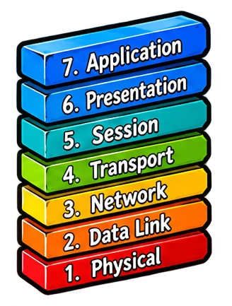
OSI · Station 1 · Grundlagen
Damit Geräte verschiedener Hersteller miteinander reden können, hat die ISO die Kommunikation im Netz in sieben Schichten zerlegt. Jede Schicht hat genau eine Aufgabe und arbeitet nur mit der Schicht direkt darüber und darunter zusammen. Dieses OSI-Modell ist die Landkarte, auf der sich alles einordnen lässt, was du bisher gelernt hast.
OSI steht für Open Systems Interconnection – „Verbindung offener Systeme“. Das Modell wurde ab 1977 von der ISO (International Organization for Standardization) entwickelt und 1984 als Norm ISO 7498 veröffentlicht. Es ist ein Referenzmodell: Es beschreibt nicht ein bestimmtes Kabel oder Programm, sondern ordnet alle Aufgaben, die bei der Übertragung anfallen.
Du schreibst einen Brief, steckst ihn in einen Umschlag, die Post sortiert ihn nach Postleitzahl, ein Lkw fährt ihn. Keiner muss die Arbeit der anderen kennen – der Lkw-Fahrer liest deinen Brief nicht.
Weil jede Schicht nur ihre Aufgabe erledigt, kann man eine Schicht austauschen, ohne die anderen zu ändern: Ob die Bits über Kupfer, Glasfaser oder WLAN laufen, ist dem Browser egal.
Gezählt wird von unten: Schicht 1 ist das Kabel, Schicht 7 das Programm, mit dem du arbeitest.
| Nr. | OSI-Modell (deutsch) | OSI-Modell (englisch) | Aufgabe | Beispiele | Dateneinheit |
|---|---|---|---|---|---|
| 7 | Anwendungsschicht | Application Layer | Schnittstelle zum Programm: stellt Dienste wie Web, E-Mail oder Namensauflösung bereit | HTTP, DNS, SMTP, FTP | Daten |
| 6 | Präsentationsschicht | Presentation Layer | Darstellung: Zeichensatz, Datenformat, Kompression, Verschlüsselung | UTF-8, JPEG, TLS-Verschlüsselung | Daten |
| 5 | Sitzungsschicht | Session Layer | Sitzung auf- und abbauen, steuern, nach Abbruch wieder aufsetzen | Anmeldung, RPC, NetBIOS | Daten |
| 4 | Transportschicht | Transport Layer | Ende-zu-Ende-Verbindung zwischen Programmen (Ports), Daten in Segmente teilen, Verlorenes neu senden | TCP, UDP | Segment |
| 3 | Netzwerkschicht | Network Layer | Logische Adressen, Weg durch mehrere Netze finden (Routing) | IPv4, IPv6, ICMP · Router | Paket |
| 2 | Datensicherungsschicht | Data Link Layer | Zustellung im lokalen Netz mit MAC-Adressen, Fehler erkennen (Prüfsumme) | Ethernet, WLAN · Switch | Frame (Rahmen) |
| 1 | Physikalische Schicht | Physical Layer | Bits als Signale übertragen: Spannung, Licht, Funk; Kabel und Stecker | Kupferkabel, Glasfaser, Funk · Hub, Repeater | Bits |
Die Themen dieses Dojos auf der Landkarte: MAC-Adressen und der Switch gehören zu Schicht 2, IPv4 und IPv6 zu Schicht 3, die Topologien beschreiben, wie Kabel und Geräte auf Schicht 1 und 2 verbunden sind.
Für die sieben Schichten gibt es einen bekannten englischen Merksatz. Ordne jeder Schicht ihr Wort zu, sodass der Satz entsteht. Klicke dazu ein Wort an und dann die Zeile der Schicht – oder ziehe das Wort mit der Maus hinein. Ein Klick auf ein eingesetztes Wort legt es zurück.
Beim Senden geht eine Nachricht alle Schichten hinunter und bekommt dabei ihre „Umschläge“ – beim Empfänger wird sie wieder ausgepackt.
Weiter zu Daten auf Reisen →OSI · Station 2 · Interaktiv
Links schreibt ein Sender eine Nachricht. Auf dem Weg nach unten setzt jede Schicht ihre Steuerinformationen davor – den Header. Schicht 2 hängt zusätzlich hinten einen Trailer an. Über das Kabel gehen nur noch Bits. Beim Empfänger rechts läuft alles umgekehrt: Jede Schicht liest „ihren“ Header und entfernt ihn.
Merke: Sender: Schicht 7 → 1, Header kommen dazu. Empfänger: Schicht 1 → 7, Header werden entfernt. Die Dateneinheiten heißen von oben nach unten Daten → Segment → Paket → Frame → Bits.
Im OSI-Dojo trainierst du die Schichtnamen, den Merksatz, die Zuordnung von Geräten und Protokollen und die Kapselung.
Weiter zum OSI-Dojo →OSI · Station 3 · Training
Vier Gürtel, vier Themen. Löse 5 Aufgaben in Folge richtig, um einen Gürtel zu erhalten.
Jetzt geht es ganz nach unten auf Schicht 1: Kabel, Stecker und wie aus Bits ein Signal auf der Leitung wird.
Weiter zum Thema Kabel & Signale →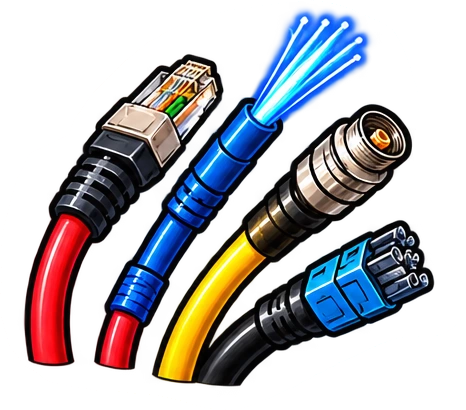
Kabel & Signale · Station 1 · Grundlagen
Auf Schicht 1 des OSI-Modells werden aus Bits Signale: elektrische Spannung im Kupferkabel, Lichtpulse in der Glasfaser oder Funkwellen im WLAN. Welches Kabel man nimmt, entscheidet über Geschwindigkeit, Reichweite und Störfestigkeit.
Ein Innenleiter, darum eine Isolierung, ein Schirm aus Drahtgeflecht und der Mantel. Damit begann Ethernet (10BASE5, 10BASE2) als Bus: alle Geräte an einem Kabel, 10 Mbit/s.
Im Netzwerk heute nicht mehr üblich. Koax steckt aber noch im Kabelfernsehen und im Kabel-Internet (DOCSIS).
Acht Adern, je zwei miteinander verdrillt zu vier Paaren. Das Standardkabel im LAN: vom Switch zur Netzwerkdose und zum PC, mit RJ45-Steckern.
Bis 100 m pro Strecke, je nach Kategorie bis 10 Gbit/s (Kat. 6A) oder mehr.
Licht wird in einem haarfeinen Glaskern geführt. Der Mantel aus Glas mit etwas anderem Brechungsindex wirft es immer wieder zurück in den Kern.
Für lange Strecken und hohe Raten: zwischen Gebäuden, im Backbone, im Rechenzentrum.
Auf einem Adernpaar wird das Signal gegenphasig übertragen: Die eine Ader führt das Signal, die andere genau das Gegenteil. Eine Störung von außen – etwa von einem Motor oder einer Stromleitung – trifft durch die Verdrillung beide Adern gleich. Der Empfänger bildet die Differenz der beiden Adern: Das Signal verdoppelt sich, die Störung hebt sich auf.
Jedes Paar ist unterschiedlich stark verdrillt. So stören sich auch die Paare untereinander kaum (das nennt man Nebensprechen).
Zusätzlich zur Verdrillung kann ein Kabel einen Schirm aus Metallfolie oder Drahtgeflecht haben. Die Bezeichnung folgt der Norm ISO/IEC 11801 und hat die Form XX/YTP:
| Teil | bedeutet | mögliche Werte |
|---|---|---|
XX vor dem Schrägstrich | Schirm um alle Paare (Gesamtschirm) | U ungeschirmt · F Folie · S Geflecht · SF Geflecht und Folie |
Y nach dem Schrägstrich | Schirm um jedes einzelne Paar | U ungeschirmt · F Folie |
TP | Twisted Pair | immer gleich |
| Multimode | Singlemode | |
|---|---|---|
| Kerndurchmesser | 50 µm – das Licht läuft auf vielen Wegen („Moden“) | 9 µm – nur ein einziger Lichtweg |
| Lichtquelle | günstiger Laser (VCSEL), 850 nm | Laser, 1310 nm oder 1550 nm |
| Reichweite bei 10 Gbit/s | 300–400 m | 10 km und mehr |
| Faserklassen | OM3, OM4, OM5 | OS2 |
| Einsatz | im Gebäude, im Rechenzentrum | zwischen Gebäuden, Provider, Glasfaser bis ins Haus |
Twisted-Pair-Kabel gibt es in verschiedenen Kategorien – und auch der Stecker muss mitspielen.
Weiter zu Kategorien & Stecker →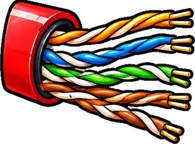
Kabel & Signale · Station 2 · Grundlagen
Je höher die Datenrate, desto höher die Frequenzen auf dem Kabel. Die Kategorie sagt, bis zu welcher Frequenz ein Kabel, eine Dose oder ein Stecker gebaut ist.
Die Kategorie (Kat., engl. Cat) gilt für einzelne Bauteile, die Klasse für die ganze Übertragungsstrecke. Eine Strecke erreicht ihre Klasse nur, wenn alle Bauteile mindestens die passende Kategorie haben.
| Kategorie | Klasse | Frequenz bis | Typischer Einsatz |
|---|
Ältere Kategorien (1, 2, 3, 4, 5 ohne „e“) braucht man für neue Netze nicht mehr. Für eine Neuinstallation nimmt man heute mindestens Kat. 6A.
Merke: Eine Twisted-Pair-Strecke ist höchstens 100 m lang: 90 m fest verlegtes Kabel (Link) plus zusammen 10 m Patchkabel an beiden Enden (Channel). Ausnahme: Kat. 8 schafft nur 30 m.
Fast jedes Netzwerkkabel aus Kupfer endet in einem RJ45-Stecker mit 8 Kontakten – einer für jede Ader. Genau genommen heißt er 8P8C-Modularstecker, „RJ45“ hat sich aber überall durchgesetzt.
Für Kat. 7, 7A und 8.2 wurden Stecker mit getrennt geschirmten Paaren entwickelt: GG45 (passt auch in RJ45-Buchsen), TERA und ARJ45. Sie sind in der Praxis selten. Wer mehr als 10 Gbit/s braucht, nimmt fast immer Glasfaser oder im Rechenzentrum kurze Direktkabel (DAC).
In der RJ45-Werkstatt lernst du die Belegungen T568A und T568B und baust selbst Kabel.
Weiter zur RJ45-Werkstatt →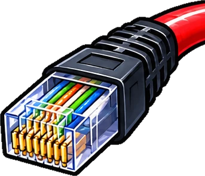
Kabel & Signale · Station 3 · Interaktiv
Die acht Adern haben feste Farben. In welcher Reihenfolge sie in den Stecker kommen, regeln zwei Normen: T568A und T568B.
Setze die acht Adern in der richtigen Reihenfolge in den Stecker. Klicke eine Ader an und dann den Pin – oder ziehe sie mit der Maus hinein.
Links ist ein Stecker nach T568B belegt, rechts ein Stecker eines Gigabit-Crossover-Kabels. Verbinde jeden Pin links mit dem Pin rechts, an dem dieselbe Ader ankommt: erst links klicken, dann rechts. Pin 1 ist schon verbunden.
Jetzt weißt du, welche Ader wohin gehört. Aber wie sieht das Signal aus, das auf so einem Adernpaar übertragen wird?
Weiter zu Leitungscodes →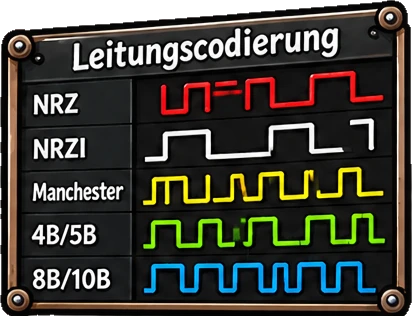
Kabel & Signale · Station 4 · Interaktiv
Ein Leitungscode legt fest, wie aus logischen Nullen und Einsen ein Signal auf der Leitung wird. Ein guter Leitungscode sorgt dafür, dass der Empfänger die Bits sicher erkennt – auch wenn seine Uhr nicht ganz genau so schnell läuft wie die des Senders.
Der einfachste Code: Spannung hoch für 1, Spannung tief für 0. Der Empfänger schaut in festen Abständen auf die Leitung. Bei vielen gleichen Bits hintereinander ändert sich das Signal aber lange nicht – und wenn der Takt des Empfängers nur ein wenig vom Takt des Senders abweicht, zählt er sich schnell um ein Bit vertan.
Der Manchester-Code baut den Takt ins Signal ein: In der Mitte jedes Bits wechselt die Spannung immer. Bei Ethernet (IEEE 802.3) gilt:
10erst hoch, dann tief: fallende Flanke in der Bitmitte
01erst tief, dann hoch: steigende Flanke in der Bitmitte
Zwei Zeichen wurden Manchester-codiert über ein Adernpaar übertragen. Ermittle die empfangenen Bits, den ASCII-Wert und das Zeichen.
Doppelt so viele Signalwechsel wie Bits – bei 10 Mbit/s ist das kein Problem. Bei 1000 Mbit/s wären die Frequenzen viel zu hoch für ein Kupferkabel. Schnellere Ethernet-Varianten nutzen deshalb Codes mit mehr Spannungsstufen: Pro Signalschritt wird mehr als ein Bit übertragen. Hier dieselben Bits wie oben in drei Codes:
Die PAM-5-Kurve ist vereinfacht: Das echte 1000BASE-T verwürfelt die Daten vorher (Scrambler) und verteilt sie mit einem Fehlerschutz-Code (Trellis-Code) auf die vier Paare. Das Prinzip „mehr Stufen = mehr Bit pro Schritt“ bleibt aber genau so.
| Standard | Leitungscode | Stufen | Signalschritte pro Sekunde und Paar |
|---|---|---|---|
| 10BASE-T | Manchester | 2 | 20 Millionen |
| 100BASE-TX | 4B5B + MLT-3 | 3 | 125 Millionen |
| 1000BASE-T | PAM-5 auf 4 Paaren | 5 | 125 Millionen |
| 10GBASE-T | PAM-16 auf 4 Paaren | 16 | 800 Millionen |
10BASE-T, 1000BASE-T, 10GBASE-SR … – was bedeuten diese Namen eigentlich?
Weiter zu Ethernet-Standards →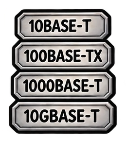
Kabel & Signale · Station 5 · Grundlagen
Alle Ethernet-Varianten stammen von der IEEE und gehören zur Normenfamilie IEEE 802.3. Seit 1983 ist Ethernet von 10 Mbit/s auf bis zu 800 Gbit/s gewachsen – die MAC-Adressen und der Aufbau des Frames sind dabei gleich geblieben.
Jeder Name folgt demselben Muster: Datenrate · BASE · Medium. „BASE“ steht für Basisband: Das Signal wird direkt auf das Kabel gegeben und belegt es allein.
Klicke einen Standard an, um ihn oben zu zerlegen. Grau markierte Standards sind Geschichte – gut zu wissen, aber in neuen Netzen nicht mehr zu finden.
Beim Koax-Bus und mit Hubs teilten sich alle Geräte ein Medium. Sendeten zwei gleichzeitig, kam es zur Kollision; beide mussten warten und neu senden (Verfahren CSMA/CD). Damit Kollisionen überall rechtzeitig erkannt werden, durfte das Netz nicht zu groß werden:
Heute: Jedes Gerät hängt an einem eigenen Switch-Port und sendet im Vollduplex – gleichzeitig in beide Richtungen. Kollisionen gibt es nicht mehr, die 5-4-3-Regel und die 205 m spielen keine Rolle. Es gilt nur noch die Länge jeder einzelnen Strecke, z. B. 100 m bei Twisted Pair.
Im Kabel-Dojo trainierst du Kabeltypen, Kategorien, die RJ45-Belegung, den Manchester-Code und die Ethernet-Standards.
Weiter zum Kabel-Dojo →Kabel & Signale · Station 6 · Training
Fünf Gürtel, fünf Themen. Löse 5 Aufgaben in Folge richtig, um einen Gürtel zu erhalten.
Von Schicht 1 geht es jetzt nach oben: Wie bekommt ein Gerät seine Adresse, wie wird aus einem Namen eine IP-Adresse, und welches Programm bekommt die Daten?
Weiter zum Thema Netzwerkdienste →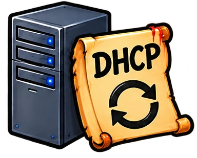
Netzwerkdienste · Station 1 · Interaktiv
Damit ein Gerät im Netz mitreden kann, braucht es eine IP-Adresse, die Subnetzmaske, das Standard-Gateway und einen DNS-Server. Das alles von Hand einzutragen, wäre mühsam und fehleranfällig. Das Dynamic Host Configuration Protocol (DHCP) erledigt es automatisch.
aus einem vorher festgelegten Adressbereich (Pool)
damit das Gerät weiß, wer im eigenen Netz ist
der Router, über den es in andere Netze geht
der Namen wie www.example.com in IP-Adressen übersetzt
wie lange die Adresse ausgeliehen ist
Ein Laptop wird ans Netz angeschlossen. Er hat noch keine IP-Adresse und kennt weder den Router noch den DHCP-Server. Wie kommt er trotzdem an seine Einstellungen?
Der Server vergibt jede Adresse nur für eine bestimmte Zeit, die Lease. Läuft sie ab, ohne verlängert zu werden, darf das Gerät die Adresse nicht mehr benutzen. So bekommt der Server Adressen von Geräten zurück, die nicht mehr da sind.
Beispiel mit einer Lease von 24 Stunden. Heimrouter vergeben oft mehrere Tage, Gäste-WLANs nur wenige Stunden.
Dem DHCP-Server gibt man an, aus welchem Bereich er Adressen verteilen darf – den Pool oder Scope. Adressen außerhalb des Pools bleiben frei für Geräte mit fester Adresse: Router, Server, Drucker.
Nach einigen Versuchen gibt sich das Gerät selbst eine Adresse aus 169.254.0.0/16 (APIPA, Link-Local). Damit erreicht es höchstens Nachbarn im selben Netz – aber kein Gateway und kein Internet. Eine 169.254-Adresse ist deshalb ein deutliches Zeichen: DHCP hat nicht geklappt.
Steckt jemand einen privaten Router ins Netz, verteilt der womöglich eigene Adressen – mit falschem Gateway. Wer zuerst antwortet, gewinnt; manche Geräte landen im falschen Netz. Gute Switches blockieren DHCP-Antworten an Ports, an denen kein DHCP-Server hängen darf (DHCP-Snooping).
ipconfig /all (Windows) siehst du, ob DHCP aktiv ist, welcher Server geantwortet hat und wann die Lease abläuft. ipconfig /release gibt die Adresse zurück, ipconfig /renew fordert neu an.Der DHCP-Server hat dem Laptop auch einen DNS-Server mitgeteilt. Wofür braucht man den?
Weiter zu DNS →Netzwerkdienste · Station 2 · Interaktiv
Menschen merken sich Namen, Computer brauchen IP-Adressen. Das Domain Name System (DNS) übersetzt Namen wie www.example.com in die IP-Adresse des Servers, auf dem die Seite liegt. Es ist eine weltweit verteilte Datenbank – kein Server kennt alle Namen.
Ein Domainname wird von rechts nach links gelesen. Ganz oben steht die Wurzel (Root), geschrieben als Punkt, der meist weggelassen wird.
Der Laptop fragt nicht selbst die ganze Welt ab. Er schickt seine Frage an einen DNS-Server – den Resolver, den ihm DHCP genannt hat (oft der Router, der weiterfragt). Der Resolver hangelt sich dann von oben durch den Baum.
Ein DNS-Server speichert zu jedem Namen Einträge (Resource Records) verschiedener Typen:
| Typ | Bedeutung | Beispiel |
|---|---|---|
| A | Name → IPv4-Adresse | www.example.com → 192.0.2.44 |
| AAAA | Name → IPv6-Adresse | www.example.com → 2001:db8::44 |
| CNAME | Name ist ein Alias für einen anderen Namen | shop.example.com → www.example.com |
| MX | Mailserver der Domain (mit Priorität) | example.com → 10 mail.example.com |
| NS | zuständige Nameserver der Domain | example.com → ns1.example.com |
| TXT | beliebiger Text, z. B. Regeln gegen gefälschte E-Mails | example.com → "v=spf1 mx -all" |
| PTR | umgekehrt: IP-Adresse → Name (Reverse-Lookup) | 192.0.2.44 → www.example.com |
Mit nslookup schickt man eine DNS-Anfrage von Hand. Gib einen Befehl ein oder wähle einen aus. Es antwortet ein simulierter DNS-Server mit Beispieldaten für example.com.
hosts (Windows: C:\Windows\System32\drivers\etc\hosts). ipconfig /displaydns zeigt den eigenen Cache, ipconfig /flushdns leert ihn.Der Server ist gefunden. Doch was in der Adresszeile des Browsers steht, ist mehr als nur ein Name.
Weiter zu URL →Netzwerkdienste · Station 3 · Interaktiv
Ein Uniform Resource Locator (URL) sagt genau, wo eine Ressource liegt und wie man sie abholt: mit welchem Protokoll, von welchem Server, über welchen Port und unter welchem Pfad.
Fast nie steht ein Port in der URL. Das Protokoll bestimmt dann den Standardport, den der Browser automatisch benutzt:
| Schema | Protokoll | Standardport |
|---|---|---|
https:// | HTTP verschlüsselt mit TLS – heute der Normalfall | 443 |
http:// | HTTP unverschlüsselt – Browser warnen davor | 80 |
ftp:// | File Transfer Protocol – von Browsern nicht mehr unterstützt | 21 |
ssh:// / sftp:// | Fernzugriff und Dateiübertragung, verschlüsselt | 22 |
Nur wenn ein Dienst auf einem anderen Port läuft, muss er mit Doppelpunkt angegeben werden – zum Beispiel http://192.168.1.20:8080/ für die Weboberfläche eines Geräts.
Trage die Teile der URL ein. Steht kein Port da, gib den Standardport an.
Auf einem Server laufen oft mehrere Dienste gleichzeitig: Webserver, Mailserver, Fernwartung. Die Portnummer entscheidet, wer zuständig ist.
Weiter zu Ports →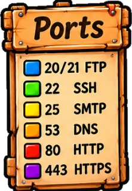
Netzwerkdienste · Station 4 · Interaktiv
Die IP-Adresse bringt ein Paket zum richtigen Gerät. Die Portnummer bringt es dort zum richtigen Programm. Ports gehören zur Transportschicht (OSI-Schicht 4) und stehen im TCP- oder UDP-Header – jedes Segment hat einen Quellport und einen Zielport.
Eine Portnummer ist 16 Bit lang. Es gibt also die Ports 0 bis 65 535. Die Behörde IANA teilt sie in drei Bereiche:
Diese Nummern sollte man kennen. Grau markierte Dienste übertragen alles unverschlüsselt, auch Passwörter – sie sind heute durch die verschlüsselte Variante ersetzt.
IP-Adresse und Port zusammen heißen Socket, geschrieben 192.0.2.44:443. Eine Verbindung besteht aus zwei Sockets. Der Client wählt seinen Quellport zufällig aus dem dynamischen Bereich – so kann der Server sogar zwei Tabs desselben Browsers auseinanderhalten. Klicke ein Programm an:
Baut zuerst eine Verbindung auf (Drei-Wege-Handshake), nummeriert die Segmente, lässt sich den Empfang bestätigen und wiederholt Verlorenes. Für alles, was vollständig ankommen muss: Webseiten, E-Mail, Dateien, SSH.
Schickt einfach los: kein Verbindungsaufbau, keine Bestätigung. Für kurze Frage-Antwort-Spiele und Echtzeit, wo Warten schlimmer ist als ein verlorenes Paket: DNS, DHCP, Videotelefonie, Online-Spiele.
Der Laptop wird eingeschaltet, im Browser wird https://www.example.com eingegeben. Das passiert, bis die Seite erscheint:
www.example.com und erhält 192.0.2.44.192.168.1.80:51832 zu 192.0.2.44:443, Drei-Wege-Handshake, danach die TLS-Verschlüsselung.GET /index.html – der Webserver schickt die Seite zurück an Port 51832.Fehlersuche mit diesem Wissen: Hat der Laptop eine 169.254-Adresse, klemmt es bei DHCP. Klappt ping 192.0.2.44, aber ping www.example.com nicht, liegt es am DNS. Klappt beides, aber die Seite lädt nicht, ist der Dienst auf dem Port nicht erreichbar – etwa wegen einer Firewall.
Im Dienste-Dojo trainierst du DHCP, DNS, URLs, Portnummern und die Fehlersuche.
Weiter zum Dienste-Dojo →Netzwerkdienste · Station 5 · Training
Sechs Gürtel, sechs Themen. Löse 5 Aufgaben in Folge richtig, um einen Gürtel zu erhalten.
Zum Abschluss geht es um Sicherheit: Wie verschlüsselt man Daten, wie funktioniert HTTPS – und wie anonym ist man im Netz wirklich?
Weiter zum Thema Verschlüsselung & Anonymität →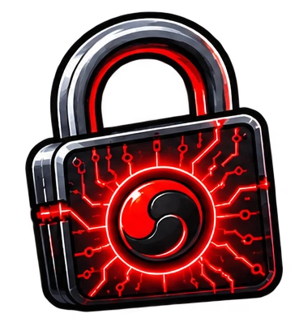
Verschlüsselung & Anonymität · Station 1 · Interaktiv
Eine Verschlüsselung macht aus einer lesbaren Nachricht (Klartext) einen unlesbaren Geheimtext. Zurück geht es nur mit dem richtigen Schlüssel. Bei der symmetrischen Verschlüsselung gibt es genau einen Schlüssel – damit wird ver- und entschlüsselt.
Das Problem: Beide brauchen denselben Schlüssel – und der muss vorher irgendwie sicher zum Empfänger kommen. Wird er dabei abgefangen, ist die ganze Verschlüsselung nutzlos.
Schon Julius Caesar verschob jeden Buchstaben um eine feste Zahl von Stellen im Alphabet. Die Zahl ist der Schlüssel: Bei Schlüssel 2 wird aus abcde der Geheimtext cdefg.
Diese Nachricht wurde mit einem unbekannten Schlüssel verschoben. Es gibt nur 25 mögliche Schlüssel – man könnte alle ausprobieren. Schneller geht es mit Statistik: In deutschen Texten ist e mit Abstand der häufigste Buchstabe.
Computer verschlüsseln Bits. Ein einfacher Baustein dafür ist XOR (Exklusiv-ODER, ⊕): Das Ergebnis ist 1, wenn genau eines der beiden Bits 1 ist. Das Besondere: Wer zweimal mit demselben Schlüssel XOR rechnet, bekommt den Klartext zurück. Klicke Schlüsselbits an, um sie umzuschalten.
Moderne symmetrische Verfahren mischen und verschieben die Bits in vielen Runden. Ihr Schlüssel ist kurz (128 oder 256 Bit) und trotzdem nicht durch Ausprobieren zu finden.
| Verfahren | Jahr | Schlüssel | Stand heute |
|---|---|---|---|
| DES | 1977 | 56 Bit | unsicher in wenigen Stunden durch Ausprobieren geknackt |
| 3DES | 1998 | 112 Bit | veraltet dreimal DES hintereinander, langsam |
| IDEA | 1991 | 128 Bit | veraltet früher in PGP, heute kaum noch verwendet |
| AES | 2001 | 128, 192, 256 Bit | Standard – in HTTPS, WLAN (WPA2/WPA3), VPN, BitLocker, Smartphones |
| ChaCha20 | 2008 | 256 Bit | moderne Alternative, schnell auf Geräten ohne AES-Beschleunigung |
2128 mögliche Schlüssel: Selbst bei einer Billion Versuchen pro Sekunde bräuchte man rund 1019 Jahre – fast eine Milliarde Mal so lange, wie das Universum alt ist.
Jedes Paar, das sich geheime Nachrichten schicken will, braucht einen eigenen Schlüssel. Bei vielen Personen wird das schnell unübersichtlich:
Es gibt einen Trick, mit dem man sich den geheimen Schlüsselaustausch spart: zwei Schlüssel, die zusammengehören.
Weiter zu Öffentlich & privat →Verschlüsselung & Anonymität · Station 2 · Interaktiv
Bei der asymmetrischen Verschlüsselung hat jede Person ein Schlüsselpaar: einen öffentlichen Schlüssel, den jeder haben darf, und einen privaten, den nur sie selbst kennt. Was mit dem einen verschlüsselt wurde, lässt sich nur mit dem anderen entschlüsseln.
Darf jeder haben – man kann ihn auf die Homepage stellen. Damit verschlüsselt man Nachrichten an den Besitzer und prüft seine Unterschriften.
Bleibt geheim beim Besitzer. Damit entschlüsselt er Nachrichten an sich und unterschreibt (signiert) Dokumente.
Wie ein Briefkasten: Jeder kann einen Brief einwerfen (mit dem öffentlichen Schlüssel verschlüsseln). Von außen sieht man den Inhalt nicht. Öffnen kann ihn nur, wer den Briefkastenschlüssel hat (den privaten Schlüssel).
Alice will Bob etwas schicken. Eve lauscht mit. Wähle, mit welchem Schlüssel Alice ihre Nachricht bearbeitet:
Das bekannteste asymmetrische Verfahren ist RSA (1977). Es beruht darauf, dass man zwei große Primzahlen leicht multiplizieren kann – das Ergebnis aber kaum wieder in seine Faktoren zerlegen. Hier mit winzigen Zahlen:
Echte RSA-Schlüssel haben 2048 bis 4096 Bit – n hat dann über 600 Dezimalstellen. Diese Zahl zu zerlegen, schafft kein heutiger Computer.
Asymmetrische Verfahren können auch beweisen, von wem ein Dokument stammt und dass es nicht verändert wurde. Dazu bildet Alice einen Hashwert – eine Art Fingerabdruck – des Dokuments und verschlüsselt ihn mit ihrem privaten Schlüssel. Das ist die Signatur. Jeder kann sie mit Alices öffentlichem Schlüssel prüfen.
Die Schlüssel werden dabei nicht vertauscht: Der private Schlüssel bleibt immer geheim, der öffentliche ist immer öffentlich. Nur ihre Rolle ändert sich – beim Signieren benutzt die Besitzerin ihren privaten Schlüssel, beim Prüfen nimmt man ihren öffentlichen.
| symmetrisch | asymmetrisch | |
|---|---|---|
| Schlüssel | einer, beide kennen ihn | Schlüsselpaar pro Person |
| Geschwindigkeit | sehr schnell | hundert- bis tausendmal langsamer |
| gleich sicher wie AES-128 | 128 Bit | RSA: 3072 Bit · elliptische Kurven: 256 Bit |
| Problem | Schlüssel muss sicher ausgetauscht werden | langsam; man muss sicher sein, dass der öffentliche Schlüssel echt ist |
| Beispiele | AES, ChaCha20 | RSA, Diffie-Hellman, elliptische Kurven (ECC) |
In der Praxis kombiniert man beides: Mit dem asymmetrischen Verfahren einigen sich die Partner auf einen Schlüssel und prüfen, mit wem sie reden. Die eigentlichen Daten werden dann schnell symmetrisch verschlüsselt. Genau so funktioniert HTTPS.
Wie Browser und Webserver beide Verfahren zusammen benutzen, siehst du an HTTPS.
Weiter zu HTTPS & Zertifikate →Verschlüsselung & Anonymität · Station 3 · Interaktiv
Bei http:// geht alles im Klartext übers Netz – jeder auf dem Weg kann mitlesen, auch Passwörter. https:// sichert die Verbindung mit TLS (Transport Layer Security, früher SSL). Aktuell ist TLS 1.3 (RFC 8446, seit 2018); TLS 1.2 ist noch erlaubt, alle älteren Versionen gelten als unsicher.
Niemand unterwegs kann den Inhalt lesen.
Niemand kann den Inhalt unbemerkt verändern.
Der Server beweist, dass er wirklich www.example.com ist.
Nicht verborgen bleibt, mit wem du sprichst: Die IP-Adresse des Servers und meist auch der Domainname sind sichtbar, ebenso Zeitpunkt und Datenmenge. TLS sitzt zwischen Transportschicht (TCP) und Anwendung (HTTP) – im OSI-Modell ordnet man es meist den Schichten 5 und 6 zu.
Wie können sich zwei auf einen Schlüssel einigen, wenn Eve jede Nachricht mitliest? Mit dem Diffie-Hellman-Schlüsselaustausch (1976). Beide wählen eine geheime Zahl und schicken nur ein daraus berechnetes Zwischenergebnis. Hier mit kleinen Zahlen (p = 23, g = 5):
Eve kennt p, g, A und B. Um den Schlüssel auszurechnen, müsste sie a oder b herausfinden – bei echten, riesigen Zahlen ist das praktisch unmöglich (diskreter Logarithmus).
Bevor die Webseite fließt, handeln Browser und Server in einer einzigen Hin-und-zurück-Runde alles aus.
Diffie-Hellman allein schützt nicht vor einem Angreifer, der sich dazwischen schaltet und beiden Seiten seine eigenen Werte unterschiebt (Man-in-the-Middle). Deshalb beweist der Server mit einem Zertifikat, dass sein öffentlicher Schlüssel wirklich zu www.example.com gehört. Ausgestellt und signiert wird es von einer Zertifizierungsstelle (CA, Certificate Authority).
Du rufst https://www.example.com auf. Wähle, welches Zertifikat der Server schickt:
HTTPS verbirgt den Inhalt – aber nicht, wer mit wem spricht. Dafür gibt es Proxy, VPN und Tor.
Weiter zu Proxy & VPN →Verschlüsselung & Anonymität · Station 4 · Interaktiv
Jeder Server, den du aufrufst, sieht deine öffentliche IP-Adresse – und über deinen Internetanbieter lässt sie sich dir zuordnen. Ein Proxy oder ein VPN schiebt einen Vermittler dazwischen: Der Server sieht dann nur noch dessen Adresse.
Auf einer Party bestellt nur Dieter beim Lieferdienst. Die Gäste sagen ihm, was sie wollen; der Lieferdienst kennt nur Dieter. Dafür muss Dieter sich merken, welche Pizza zu wem gehört. Wähle einen Gast:
http:// – alles, was du abrufst. Je nach Land kann der Betreiber gezwungen werden, Daten herauszugeben.Proxy-Listen teilen Proxys in drei Stufen ein. Entscheidend ist, was der Proxy dem Webserver in seiner Anfrage mitteilt – nicht, was er selbst speichert:
| Stufe | Webserver sieht deine IP? | Webserver merkt, dass ein Proxy dazwischen ist? |
|---|---|---|
| Transparent (Level 3) | ja – im Header X-Forwarded-For | ja |
| Anonym (Level 2) | nein | ja |
| Elite (Level 1) | nein | nein |
Vorsicht mit kostenlosen Proxys: Wer sie betreibt und warum, weiß man nicht. Ein Proxy kann unverschlüsselte Seiten mitlesen und sogar verändern. Wenn überhaupt, dann nur mit https:// benutzen – und nie für Anmeldungen.
Schaltet man mehrere Proxys hintereinander, kennt jeder nur seinen Vorgänger und Nachfolger. Aber: Jede Anfrage läuft zuerst über den eigenen Internetanbieter (ISP). Ist die Verbindung zum ersten Proxy unverschlüsselt, sieht der Provider weiter genau, was du bestellst.
Ein Virtual Private Network verbindet Geräte oder ganze Netze über das Internet so, als hingen sie im selben privaten Netz. Die Daten laufen verschlüsselt durch einen Tunnel: Das ursprüngliche Paket wird verschlüsselt und in ein neues Paket an den VPN-Server verpackt.
Zwei Firmenstandorte: Die Router bauen einen Tunnel auf. Geräte erreichen sich mit ihren privaten Adressen, obwohl das Internet dazwischen liegt.
Im Homeoffice verbindet sich der Laptop per VPN mit dem Firmennetz und kommt so an Server und Laufwerke, die nicht im Internet stehen.
Proxy und VPN haben eine Schwachstelle: Einer kennt immer beides – wer du bist und was du aufrufst. Tor verteilt dieses Wissen auf drei Stationen.
Weiter zu Tor & Anonymität →Verschlüsselung & Anonymität · Station 5 · Interaktiv
Tor (The Onion Router) leitet jede Verbindung über drei zufällig gewählte Knoten. Das Prinzip „Onion Routing“ entstand in den 1990er-Jahren am Forschungslabor der US-Marine; heute betreibt das gemeinnützige Tor Project die Software. Die rund 7 000 Knoten stellen Freiwillige auf der ganzen Welt bereit.
Der Tor-Browser lädt eine Liste aller Knoten und wählt drei aus: Eintrittsknoten, Mittelknoten, Austrittsknoten. Dann verschlüsselt er seine Anfrage dreimal – wie Schalen einer Zwiebel.
https:// kann er den Inhalt mitlesen!.onion liegen direkt im Tor-Netz – dann verlässt die Verbindung Tor gar nicht und es gibt keinen Austrittsknoten.Vergleiche, was die Stationen unterwegs über deine Verbindung zu www.example.com erfahren:
Tor, VPN und Proxys zu benutzen ist in Deutschland erlaubt. Journalistinnen, Menschen in Ländern mit Zensur und alle, die nicht überall Spuren hinterlassen wollen, sind auf solche Werkzeuge angewiesen. Was im Netz verboten ist, bleibt es aber auch mit Anonymisierung.
Im Sicherheits-Dojo trainierst du Caesar und XOR, symmetrische und asymmetrische Verfahren, HTTPS und Zertifikate sowie Proxy, VPN und Tor.
Weiter zum Sicherheits-Dojo →Verschlüsselung & Anonymität · Station 6 · Training
Sechs Gürtel, sechs Themen. Löse 5 Aufgaben in Folge richtig, um einen Gürtel zu erhalten.
Du hast serielle Schnittstellen, MAC-Adressen, IPv4, Topologien, IPv6, das OSI-Modell, Kabel und Signale, die Netzwerkdienste sowie Verschlüsselung und Anonymität durchgearbeitet. Wiederholen kannst du jederzeit – am besten in den Übungs-Dojos, bis alle Gürtel in Farbe leuchten.
Zurück zum Anfang ↺Noch gesperrt
Dieses Thema wird freigeschaltet, sobald du alle Stationen des Themas durchgearbeitet hast.
Öffne jede Station einmal – danach geht es hier weiter. Der Fortschritt wird nur in diesem Browser gespeichert.